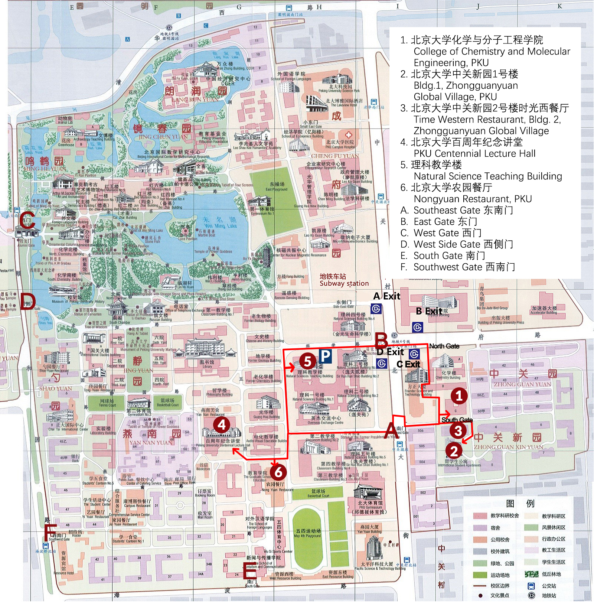
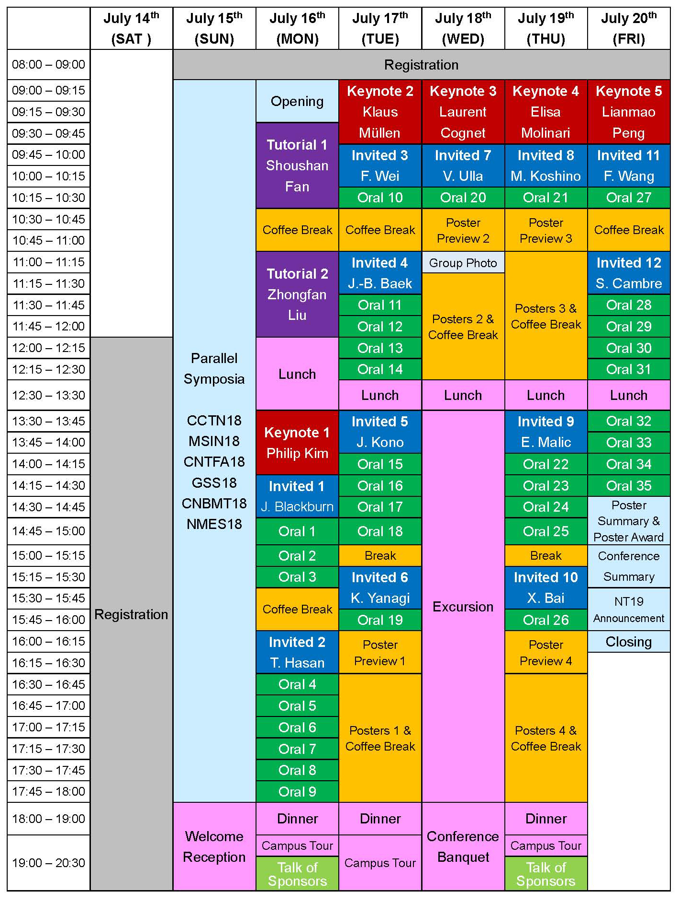
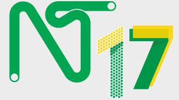

Home
NT18
Venue
Speakers
Scientific Program
Social Program
Parallel Symposia
Participation
Important Dates
Registration and Payment
Abstract Submission
Visa Information
Sponsors and Exhibitions
Peking University
Location
Travel Information
Accommodation
About and Contact
NT Charter
NT Conferences
Committee
Contact Us
<h2 style="text-align: center;"> Welcome to NT18 Conference! </h2> <p class="note" style="text-align: center;line-height: 24px;"> The Nanotube (NT) conference series is one of the most influential scientific meetings in the field of nanoscience and nanotechnology. It aims to disseminate the latest advances in both the science and technology of carbon nanotubes and the other related low dimensional materials. <br/>The nineteenth conference—NT18, will be held on: </p> <p style="text-align: center; font-size: 23px; font-weight: bold;line-height: 24px"> 15<sup>th</sup> to 20<sup>th</sup> July, 2018 </p> <p class="note" style="text-align: center;line-height: 24px"> at the Centennial Lecture Hall of Peking University, Beijing, China.<br /> We are looking forward to your participation. </p> <p align="center"> <strong>News</strong> <br> Sumio Iijima and Rodney S. Ruoff will chair the Tutorial Talks.<br> Poster Presenters should <a href="#?load=Abs" onclick="loadData(1, 'loadAbs');" style="text-decoration:none"><strong>submit your Poster Preview</strong></a> before <strong>July 1st</strong>. </p> <table border="1" align="center" bordercolor="#FFFFFF"> <tbody> <tr class="StarTextNav"> <td><a href="#?load=Abs" onclick="loadData(1, 'loadAbs');">Poster</a></td> <td><a href="#?load=SciProg" onclick="loadData(1, 'loadSciProg');">Program</a></td> <!--<td><a href="http://nt18.medmeeting.org/Useren/contribute/6728">Submission</a></td> --> <td><a href="http://meeting.yizhifubj.com.cn/web/index.action?meetingId=410">Registration</a></td> <td><a href="doc/4thAnnouncement.pdf">4th Announcement</a></td> </tr> </tbody> </table> <br> <div class="slider"> <ul> </ul> </div> <script> scroll_main(400, 11); </script> <!-- <h2 style="text-align: center;"> Tutorial Talks </h2> <table class="keyNote" width="650px" border="0" align="center"> <tbody class="keynoteimg"> <tr> <td><a href="http://www.tsinghua.edu.cn/publish/newthu/newthu_cnt/teacher/teacher-1-27.html" target="_blank"><img src="img/KeynoteReport/Shoushan Fan.jpg" /></a></td> <td><a href="http://www.chem.pku.edu.cn/cnc/cn/zxcy/jy/index.htm" target="_blank"><img src="img/KeynoteReport/Zhongfan Liu.jpg"/></a></td> <td width="160px"></td> <td width="160px"></td> </tr> <tr> <td><a href="http://www.tsinghua.edu.cn/publish/newthu/newthu_cnt/teacher/teacher-1-27.html" target="_blank"><b>Shoushan Fan</b></a></td> <td><a href="http://www.chem.pku.edu.cn/cnc/cn/zxcy/jy/index.htm"><b>Zhongfan Liu</b></a></td> <td><b>Sumio Iijima</b></td> <td><b>Rodney S. Ruoff</b></td> </tr> </tbody> </table> --> <!-- <table class="keyNote" width="450px;" border="0" align="center"> <tbody class="keynoteimg"> <tr> <td width="160px"></td> <td width="160px"></td> </tr> <tr> <td><b>Sumio Iijima</b></td> <td><b>Rodney S. Ruoff</b></td> </tr> </tbody> </table> --> <h2 style="text-align: center;"> Keynote Speakers </h2> <table class="keyNote" width="750px" border="0" align="center"> <tbody class="keynoteimg"> <tr> <td><a href="http://www.cognet-research.com/about-lc.html" target="_blank"></a></td> <td><a href="http://kim.physics.harvard.edu/" target="_blank"><img src="img/KeynoteReport/PhilipKim.jpg"/></a></td> <td><a href="http://www.nano.cnr.it/?mod=peo&id=174"><img src="img/KeynoteReport/ElisaReinford.jpg"/></a></td> <td><a href="http://www.mpip-mainz.mpg.de/4594777/synthetische-chemie"><img src="img/KeynoteReport/Klaus Mullen.jpg" /></a></td> <td><a href="http://nano.pku.edu.cn/StaffHome.aspx?person=1"></a></td> </tr> <tr> <td><a href="http://www.cognet-research.com/about-lc.html" target="_blank"><b>Laurent Cognet</b></a></td> <td><a href="http://kim.physics.harvard.edu/"><b>Philip Kim</b></a></td> <td><a href="http://www.nano.cnr.it/?mod=peo&id=174"><b>Elisa Molinari</b></a></td> <td><a href="http://www.mpip-mainz.mpg.de/4594777/synthetische-chemie"><b>Klaus Müllen</b></a></td> <td><a href="http://nano.pku.edu.cn/StaffHome.aspx?person=1"><b>Lianmao Peng</b></a></td> </tr> </tbody> </table> <h2 style="text-align: center;"> Awards </h2> <table border="0" style="table-layout: fixed" align="center"> <tbody> <tr> <td align="center" width="90px"></td> <td align="center" width="90px"></td> <td align="center" width="90px"></td> <td align="center" width="90px"></td> </tr> </tbody> </table> <h2 style="text-align: center;"> Sponsors </h2> <table border="0" style="table-layout: fixed" align="center"> <tbody> <tr> <td align="center" width="100px"></td> <td align="center" width="100px"></td> <td align="center" width="100px"></td> <td align="center" width=""></td> </tr> <tr> <td> </td><td> </td><td> </td><td> </td> </tr> <tr> <td align="center" width=""></td> <td align="center" width=""></td> <td align="center" width=""></td> <td align="center" width=""><img src="img/Sponsor/sps/Bruker.png" height="65px"></td> </tr> </tbody> </table>
<h2> Happy New Year </h2> <p> Wishing you good health, happiness and good luck! Best wishes for our communication and research progress in the comming year, welcome to join NT18! Here is some brief information of Chinese New Year. </p> <p class="StarText"> <strong style="font-size: 30px;"> When is Chinese New Year and why does the date change every year? </strong> </p> <p> The Year of the Dog begins on February 16, 2018. Celebrations will last until March 2nd - about 15 days in total - making this the longest holiday in the Chinese calendar.<br> Chinese New Year takes place on a different date every year, because it is based on the lunar calendar. But it always falls between the end of January and mid-February.<br> In this calendar a month is two days shorter than in the solar calendar so to make up for it an extra month is added every few years.<br> </p> <p class="StarText" align="center"> <hr color="#7F0000"> <strong style="font-size:40px; line-height: 80px; text-align: center;"> The Year of the Dog </strong> </p> <p> The Chinese calendar attaches different animals from the zodiac to each lunar year in a cycle of 12 years. This year is the Year of the Dog and last year it was the Rooster.<br> For people born in a dog year,you're apparently set to have an unlucky time because tradition denotes that the year of your birth makes for an unlucky 12 months.<br> Dogs are the eleventh sign in the zodiac and are seen as independent, sincere, loyal and decisive, who aren't afraid of difficulties in life. Due to these characteristics they also enjoy harmonious relationships with those around them.<br> </p> <p class="StarText" align="center"> <hr color="#7F0000"> <strong style="font-size: 30px; line-height: 80px; text-align: center;"> How is Chinese New Year celebrated? </strong> </p> <p> Chinese New Year's Eve is seen as an important date, with families gathering together for a reunion dinner. Firecrackers are then let off to signal the end of last year and the beginning of next.<br> On New Year's Day, families gather, clean their houses and sweep away bad-fortune.People also decorate their houses with red paper cutouts, banners and special New Year paintings during the festive period. <br> Red envelopes stuffed with "lucky money" are given to children, along with written wishes for their kids to grow up healthy. Now we also have red envelope apps - where people can exchange cyber money - being launched.<br> </p>
<h2> Venue </h2> <p class="StarText"><strong>Map of NT18 Conference</strong><br> <div style="align-content: center"><a href="img/NT18MAP.jpg"></a></div> </p> <p class="StarText"><strong>Map of Parallel Symposia</strong><br> <div style="text-align: center"><a href="img/MapOfSP.jpg"></a></div> </p> <p class="StarText"><strong>Map of Registration</strong><br> <div style="text-align: center"><a href="img/MapOfRegistration.jpg"></a></div> </p> <hr> <p class="StarText"><strong>Panorama</strong></p> <div id="panoramaVenue" class="StarText"> </div> <script type="text/javascript"> panorama("panoramaVenue", 600, '01002200001309200841065355L', {heading: 260.23, pitch: 4.46}, "panoramaVenue_1"); </script> <p id="panoramaVenue_1" class="StarTextSmall" style="text-align: center;"> Online tour Peking University using Baidu Map Panorama. Entry: South-East Gate<br /> <b>Click</b> (the arrows) to move around; <b>Scroll</b> to zoom; <b>Drag</b> to change angle of view.<br /> Click the icon on the lower left corner to enjoy a fullscreen view. </p> <hr> <p> NT18 will be held in Peking University (PKU), Beijing, China.<br /><br /> Peking University is a comprehensive and national key university, which was founded in 1898. The campus, known as "Yan Yuan" (the garden of Yan), is situated at Haidian District in the western suburb of Beijing, with a total area of 274 hectares). It stands near to the Yuanmingyuan Garden and the Summer Palace.<br /><br /> Peking University is proud of its outstanding faculty, including 53 members of the Chinese Academy of Sciences (CAS), 7 members of the Chinese Academy of Engineering (CAE), and 14 members of the Third World Academy of Sciences (TWAS).<br /><br /> The university has effectively combined research on important scientific subjects with the training of personnel with a high level of specialized knowledge and professional skill as demanded by the country's socialist modernization. It strives not only for improvements in teaching and research work, but also for the promotion of interaction and mutual promotion among various disciplines.<br /><br /> Thus Peking University has become a center for teaching and research and a university of a new type, embracing diverse branches of learning such as basic and applied sciences, social sciences and the humanities, and sciences of medicine, management, and education. Its aim is to rank among the world's best universities in the future.<br /> </p> <p class="StarTextSmall"> See also: <a href="http://english.pku.edu.cn/" target="_blank">Peking University Official Site</a><br /> </p> <h3> Peking University Centennial Lecture Hall </h3> <p> <!--TODO: details about PKU Hall--> The main session will use Peking University Centennial Lecture Hall (PKU Hall in brief) as the venue. The specific conference place and facilities are undetermined at present.<br /></p> <p class="StarTextSmall">Position in <a href="https://goo.gl/maps/db6VFiHHrEt" target="_blank">Google Map</a></p>
<h2> Scientific Program </h2> <div class="StarText"> <strong>NT18 Program</strong> </div> <!-- <p>  </p> <p class="StarTextMix"> Here is a brief look of the conference. We will update the information when confirmed. </p> <!-- NEW PROGRAM--> <p> <table class="ProgramTable" border="2px"> <tbody> <tr> <td width="88px;"> </td> <td width="80px;"><strong>July 14<sup>th</sup><br>(SAT)</strong></td> <td width="95px;"><strong>July 15<sup>th</sup><br>(SUN)</strong></td> <td width="95px;"><strong>July 16<sup>th</sup><br>(MON)</strong></td> <td width="95px;"><strong>July 17<sup>th</sup><br>(TUE)</strong></td> <td width="95px;"><strong>July 18<sup>th</sup><br>(WED)</strong></td> <td width="95px;"><strong>July 19<sup>th</sup><br>(THU)</strong></td> <td width="95px;"><strong>July 20<sup>th</sup><br>(FRI)</strong></td> </tr> <tr> <td height="40px">08:00-09:00</td> <td rowspan="13"> </td> <td colspan="6" class="Registration"><strong>Registration</strong></td> </tr> <tr> <td>09:00-09:15</td> <td class="ParellelSymposia" rowspan="33"><strong>Parallel<br>Symposia</strong><br><br>CCTN18<br>MSIN18<br>CNTFA18<br>GSS18<br>CNBMT18<br>NMES18</td> <td class="Event" rowspan="2"><strong>Opening</strong></td> <td class="Keynote" rowspan="3"><strong>Keynote 2</strong><br>Klaus<br>Müllen</td> <td class="Keynote" rowspan="3"><strong>Keynote 3</strong><br>Laurent<br>Cognet</td> <td class="Keynote" rowspan="3"><strong>Keynote 4</strong><br>Elisa<br>Molinari</td> <td class="Keynote" rowspan="3"><strong>Keynote 5</strong><br>Lianmao<br>Peng</td> </tr> <tr> <td>09:15-09:30</td> </tr> <tr> <td>09:30-09:45</td> <td class="Tutorial" rowspan="4"><strong>Tutorial</strong><br>Shoushan<br>Fan</td> </tr> <tr> <td>09:45-10:00</td> <td class="Invited" rowspan="2"><strong>Invited 3</strong><br>Fei Wei</td> <td class="Invited" rowspan="2"><strong>Invited 7</strong><br>Ulla Vogel</td> <td class="Invited" rowspan="2"><strong>Invited 8</strong><br>Mikito Koshino</td> <td class="Invited" rowspan="2" style="line-height: 14px"><strong>Invited 11</strong><br>Feng Wang</td> </tr> <tr> <td>10:00-10:15</td> </tr> <tr> <td>10:15-10:30</td> <td class="Oral">S. Maruyama</td> <td class="Oral">Y. Liu</td> <td class="Oral">C. Bichara</td> <td class="Oral">A. Nasibulin</td> </tr> <tr> <td>10:30-10:45</td> <td class="Coffee" nowrap>Group Photo</td> <td class="Coffee" rowspan="2">Coffee Break</td> <td class="Coffee" rowspan="2">Poster<br>Preview</td> <td class="Coffee" rowspan="2">Poster<br>Preview</td> <td class="Coffee" rowspan="2">Coffee Break</td> </tr> <tr> <td>10:45-11:00</td> <td class="Coffee">Coffee Break</td> </tr> <tr> <td>11:00-11:15</td> <td class="Tutorial" rowspan="4"><strong>Tutorial</strong><br>Huiming<br>Cheng</td> <td class="Invited" rowspan="2" style="line-height: 14px"><strong>Invited 4</strong><br>Jong-Beom Baek</td> <td class="Coffee" rowspan="6">Coffee Time<br><br>Poster<br>PS&PC</td> <td class="Coffee" rowspan="6">Coffee Time<br><br>Poster<br>PA&PO</td> <td class="Invited" rowspan="2"><strong>Invited 12</strong><br>Sofie Cambre</td> </tr> <tr> <td>11:15-11:30</td> </tr> <tr> <td>11:30-11:45</td> <td class="Oral">F. Ding</td> <td class="Oral">H. Kataura</td> </tr> <tr> <td>11:45-12:00</td> <td class="Oral">K. Jiang</td> <td class="Oral">Y. K. Yap</td> </tr> <tr> <td>12:00-12:15</td> <td rowspan="24" class="Registration"><strong>Registration</strong></td> <td class="Dinner" rowspan="3">Lunch</td> <td class="Oral" style="font-size: 7px" nowrap>S. Esconjauregui</td> <td class="Oral">A. Page</td> </tr> <tr> <td>12:15-12:30</td> <td class="Oral">S. Zhang</td> <td class="Oral">L. Shi</td> </tr> <tr> <td height="40px">12:30-13:30</td> <td class="Dinner">Lunch</td> <td class="Dinner">Lunch</td> <td class="Dinner">Lunch</td> <td class="Dinner">Lunch</td> </tr> <tr> <td>13:30-13:45</td> <td class="Keynote" rowspan="3"><strong>Keynote 1</strong><br>Phillip<br>Kim</td> <td class="Invited" rowspan="2" style="line-height: 14px"><strong>Invited 5</strong><br>Junichiro Kono</td> <td class="Dinner" rowspan="18">Excursion</td> <td class="Invited" rowspan="2"><strong>Invited 9</strong><br>Ermin Malic</td> <td class="Oral">E. Kauppinen</td> </tr> <tr> <td>13:45-14:00</td> <td class="Oral">J. Wang</td> </tr> <tr> <td>14:00-14:15</td> <td class="Oral">C. Liu</td> <td class="Oral">R. Saito</td> <td class="Oral">Q. Li</td> </tr> <tr> <td>14:15-14:30</td> <td class="Invited" rowspan="2"><strong>Invited 1</strong><br>Jeffrey Blackburn</td> <td class="Oral">X. Pan</td> <td class="Oral">A. Loiseau</td> <td class="Oral">A. Cao</td> </tr> <tr> <td>14:30-14:45</td> <td class="Oral">F. Yang</td> <td class="Oral">Z. Zhang</td> <td class="Oral">Y. Zhang</td> </tr> <tr> <td>14:45-15:00</td> <td class="Oral">C. Zhou</td> <td class="Oral">X. Lu</td> <td class="Oral">X. Zou</td> <td class="Oral">D. Wei</td> </tr> <tr> <td>15:00-15:15</td> <td class="Oral">A. Hüttel</td> <td class="Coffee">Break</td> <td class="Coffee">Break</td> <td class="Coffee">Break</td> </tr> <tr> <td>15:15-15:30</td> <td class="Oral">J. Liang</td> <td class="Invited" rowspan="2" style="line-height: 14px"><strong>Invited 6</strong><br>Kazuhiro Yanagi</td> <td class="Invited" rowspan="2"><strong>Invited 10</strong><br>Xuedong Bai</td> <td class="Event" rowspan="2" style="line-height: 13px;">Awards</td> </tr> <tr> <td>15:30-15:45</td> <td class="Coffee" rowspan="2">Coffee Break</td> </tr> <tr> <td>15:45-16:00</td> <td class="Oral">K. Liu</td> <td class="Oral">R. Xiang</td> <td class="Event" rowspan="2">Conference Summary</td> </tr> <tr> <td>16:00-16:15</td> <td class="Invited" rowspan="2" style="line-height: 14px"><strong>Invited 2</strong><br>Tawfique Hasan</td> <td class="Coffee" rowspan="2">Poster <br>Preview</td> <td class="Coffee" rowspan="2">Poster <br>Preview</td> </tr> <tr> <td>16:15-16:30</td> <td class="Event" style="line-height: 10px;font-size: 10px;">NT19 Announcement</td> </tr> <tr> <td>16:30-16:45</td> <td class="Oral">F. Leite</td> <td class="Coffee" rowspan="6">Coffee Time<br><br>Poster<br>PS&PC</td> <td class="Coffee" rowspan="6">Coffee Time<br><br>Poster<br>PA&PO</td> <td class="Event">Closing</td> </tr> <tr> <td>16:45-17:00</td> <td class="Oral">D. Bandruin</td> <td rowspan="8"> </td> </tr> <tr> <td>17:00-17:15</td> <td class="Oral">Y. Chen</td> </tr> <tr> <td>17:15-17:30</td> <td class="Oral">S. Malik</td> </tr> <tr> <td>17:30-17:45</td> <td class="Oral">Z. Hu</td> </tr> <tr> <td>17:45-18:00</td> <td class="Oral">M. Xu</td> </tr> <tr> <td height="40px">18:00-19:00</td> <td class="Dinner" rowspan="3"><strong>Welcome Reception</strong></td> <td class="Dinner">Dinner</td> <td class="Dinner">Dinner</td> <td class="Dinner" rowspan="3">Conference Banquet</td> <td class="Dinner">Dinner</td> </tr> <tr> <td rowspan="2">19:00-20:30</td> <td class="Dinner" nowrap>Campus Tour</td> <td class="Dinner" rowspan="2">Campus Tour</td> <td class="Dinner" nowrap>Campus Tour</td> </tr> <tr> <td class="Sponsor">Talk of Sponsors</td> <td class="Sponsor">Talk of Sponsors</td> </tr> </tbody> </table> </p> <!-- --> <div class="StarText"> <strong>NT18 Topics</strong> </div> <div class="StarTextMid"> <ul> <li>Synthesis, Processing, and Functionalization</li> <ul style="list-style-type: none"> <li>S1 Controlled synthesis & preparation</li> <li>S2 Purification, separation, sorting</li> <li>S3 Chemical modification & functionalization</li> </ul> </ul> <ul> <li>Properties and Characterizations</li> <ul style="list-style-type: none"> <li>C1 Mechanical, electronic, optical properties</li> <li>C2 Characterization techniques</li> </ul> </ul> <ul> <li>Theory and Simulation</li> </ul> <ul> <li>Applications</li> <ul style="list-style-type: none"> <li>A1 Sensors & devices</li> <li>A2 Energy & environmental</li> <li>A3 Composites</li> <li>A4 Toxicology & biomedical applications</li> </ul> </ul> <ul> <li>Scale-up for Industrialization</li> <ul style="list-style-type: none"> <li>Mass production, standardization</li> </ul> </ul> </div>
<h2> NT18 Speakers </h2> <div class="StarText"> <strong>Tutorial Talks</strong> </div> <div class="StarTextMix"> <table style="border-collapse: separate; border-spacing: 10px 15px;"> <tbody class="StarTextMix"> <tr> <td width="160px"> <a href="http://www.tsinghua.edu.cn/publish/newthu/newthu_cnt/teacher/teacher-1-27.html" target="_blank"> <img height="150px" src="img/KeynoteReport/Shoushan Fan.jpg"/> </a> </td> <td> <a href="http://www.tsinghua.edu.cn/publish/newthu/newthu_cnt/teacher/teacher-1-27.html" target="_blank"> <b>Shoushan Fan</b> </a> <br /> Tsinghua University, China </td> </tr> <tr> <td> <a href="http://sourcedb.imr.cas.cn/yw/rck/201311/t20131115_3978983.html"> </a> </td> <td> <a href="http://sourcedb.imr.cas.cn/yw/rck/201311/t20131115_3978983.html"> <b>Huiming Cheng</b> </a> <br /> Chinese Academy of Sciences, China </td> </tr> </tbody> </table> </div> <div class="StarText"> <strong>Keynote Speakers</strong> </div> <div class="StarTextMix"> <table style="border-collapse: separate; border-spacing: 10px 15px;"> <tbody class="StarTextMix"> <tr> <td width="160px"> <a href="http://www.cognet-research.com/about-lc.html" target="_blank"> </a> </td> <td> <a href="http://www.cognet-research.com/about-lc.html" target="_blank"> <b>Laurent Cognet</b> </a> <br /> Institut d'Optique - University of Bordeaux, France </td> </tr> <tr> <td> <a href="http://kim.physics.harvard.edu/" target="_blank"> <img height="150px" src="img/KeynoteReport/PhilipKim.jpg"/> </a> </td> <td> <a href="http://kim.physics.harvard.edu/"> <b>Philip Kim</b> </a> <br /> Harvard University, USA </td> </tr> <tr> <td> <a href="http://www.nano.cnr.it/?mod=peo&id=174"> <img height="150px" src="img/KeynoteReport/ElisaReinford.jpg"/> </a> </td> <td> <a href="http://www.nano.cnr.it/?mod=peo&id=174"> <b>Elisa Molinari</b> </a> <br /> University of Modena and Reggio Emilia, Italy </td> </tr> <tr> <td> <a href="http://www.mpip-mainz.mpg.de/4594777/synthetische-chemie"> <img height="150px" src="img/KeynoteReport/Klaus Mullen.jpg" /> </a> </td> <td> <a href="http://www.mpip-mainz.mpg.de/4594777/synthetische-chemie"> <b>Klaus Müllen</b> </a> <br /> Max Planck Institute for Polymer Research, Germany </td> </tr> <tr> <td> <a href="http://nano.pku.edu.cn/StaffHome.aspx?person=1"> </a> </td> <td> <a href="http://nano.pku.edu.cn/StaffHome.aspx?person=1"> <b>Lianmao Peng</b> </a> <br /> Peking University, China </td> </tr> </tbody> </table> </div> <div class="StarText"> <strong>Confirmed Invited Speakers</strong> </div> <table border="0"> <tbody class="StarTextMid"> <tr> <td style="padding-right: 10px;" width="170px;"><a style="text-decoration: none" href="http://engewang.iphy.ac.cn/index.php?page=xuedong-bai"><strong>Xuedong Bai</strong></a></td> <td nowrap>Institute of Physics, Chinese Academy of Sciences, China</td> </tr> <tr> <tr> <td><a style="text-decoration: none" href="http://jbbaek.unist.ac.kr/"><strong>Jong-Beom Beak</strong></a></td> <td>Ulsan National Institute of Science and Technology, Korea</td> </tr> <td><a style="text-decoration: none" href="https://www.nrel.gov/research/jeffrey-blackburn.html"><strong>Jeffrey Blackburn</strong></a></td> <td>National Renewable Energy Laboratory, USA</td> </tr> <tr> <td><a style="text-decoration: none" href="https://www.uantwerpen.be/en/staff/sofie-cambre/"><strong>Sofie Cambre</strong></a></td> <td>Antwerp University, Belgium</td> </tr> <tr> <td><a style="text-decoration: none" href="http://hne.eng.cam.ac.uk/"><strong>Tawfique Hasan</strong></a></td> <td>Cambridge University, UK</td> </tr> <tr> <td><a style="text-decoration: none" href="http://kono.rice.edu/"><strong>Junichiro Kono</strong></a></td> <td>Rice University, USA</td> </tr> <tr> <td><a style="text-decoration: none" href="http://www.cmpt.phys.tohoku.ac.jp/~koshino/"><strong>Mikito Koshino</strong></a></td> <td>Osaka University, Japan</td> </tr> <tr> <td><a style="text-decoration: none" href="https://www.malic-group.com/"><strong>Ermin Malic</strong></a></td> <td>Chalmers University of Technology, Sweden</td> </tr> <tr> <td><a style="text-decoration: none" href="http://orbit.dtu.dk/en/persons/ulla-birgitte-vogel(b09b3c47-5cc7-474a-af05-a4b378c96531).html"><strong>Ulla Birgitte Vogel</strong></a></td> <td style="line-height: 27px;">Technical University of Denmark, Denmark</td> </tr> <tr> <td><a style="text-decoration: none" href="http://physics.berkeley.edu/people/faculty/feng-wang"><strong>Feng Wang</strong></a></td> <td>University of California, Berkeley, USA</td> </tr> <tr> <td><a style="text-decoration: none" href="http://www.chemeng.tsinghua.edu.cn/scholars/weifei/index.htm"><strong>Fei Wei</strong></a></td> <td>Tsinghua University, China</td> </tr> <tr> <td><a style="text-decoration: none" href="http://www.phys.se.tmu.ac.jp/?page_id=55#Surface_and_Interface_Physics"><strong>Kazuhiro Yanagi</strong></a></td> <td> Tokyo Metropolitan University, Japan</td> </tr> </tbody> </table>
<h2> Forbidden City </h2> <ul class="StarText" style="font-size: 20px;"> <li> <p>The Forbidden City was the Chinese imperial palace from the Ming dynasty to the end of the Qing dynasty—the years 1420 to 1912. It is in the center of Beijing, China, and now houses the Palace Museum. It served as the home of emperors and their households as well as the ceremonial and political center of Chinese government for almost 500 years.</p> <p>Constructed from 1406 to 1420, the complex consists of 980 buildings and covers 72 ha (over 180 acres). The palace complex exemplifies traditional Chinese palatial architecture, and has influenced cultural and architectural developments in East Asia and elsewhere. The Forbidden City was declared a World Heritage Site in 1987, and is listed by UNESCO as the largest collection of preserved ancient wooden structures in the world.</p> <p>Since 1925 the Forbidden City has been under the charge of the Palace Museum, whose extensive collection of artwork and artefacts were built upon the imperial collections of the Ming and Qing dynasties. Part of the museum's former collection is now in the National Palace Museum in Taipei. Both museums descend from the same institution, but were split after the Chinese Civil War. Since 2012, the Forbidden City has seen an average of 15 million visitors annually, and had 16 millions visitors in 2016.</p> </li> <img src="img\SocialProgram\Gugong.jpg" /> <li><a href="http://en.dpm.org.cn/">Click here to learn more.</a></li> </ul> <h2> The National Museum of China </h2> <ul class="StarText" style="font-size: 20px;"> <li> <p>The National Museum of China (NMC) is located at the east side of Tiananmen Square, opposite the Great Hall of the People. It was founded in February 2003, based on the merging of two previous museums, namely the National Museum of Chinese History and the National Museum of Chinese Revolution. NMC, an integrated national museum under the Ministry of Culture of China, draws equally from both history and art and is dedicated to its collections, exhibitions, research, archeology, public education and cultural communication. Its basic functions are collections of cultural relics and artworks, exhibitions, public education, history and art research and cultural communication. </p> <p>The predecessor of the Museum of Chinese History was the Preparatory Office of the Museum of Chinese History, founded on July 9, 1912. Upon the founding of the People's Republic of China on Oct 1st , 1949, the museum was renamed the Beijing Museum of History, only to be renamed once again as the National Museum of Chinese History in 1959. The predecessor of the Museum of Chinese Revolution was the Preparatory Office of the National Revolution Museum, which was founded in March, 1950 and was given its current name ten years later. In August 1959, with the completion of a new building on the east side of Tiananmen Square, and this housed both museums; it was acclaimed as one of the Ten Great Constructions built to celebrate the tenth anniversary of the People’s Republic of China. On Oct 1st of that same year, the two museums opened to the public. </p> <p>We hold leading within China, first-class externally as our main objective, people foremost as a principle of development, honest to reality, close to life, friendly to the people as a value, and talent, collection, academics and services as the key points in running the museum. It is of great importance to preserve, inherit, display, and develop the magnificent Chinese culture. Meanwhile, as the most important cultural and art institution in China, NMC not only displays China’s outstanding civilization achievements, but also those of other parts of the world. </p> <p>To support the public cultural service system and satisfy the learning needs of the community, we strive to promote the historical and cultural knowledge of the general public, in particular young people, while working to nurture civilization and facilitate life-long learning in the cultural sphere and in the classroom. </p> <p>NMC plays an important role in displaying Chinese culture, cultivating national spirit; as such it is a world leader amongst museums in developing the field of cultural relics. </p> <p>From March, 2007 to December, 2010, NMC carried out a project to expand the museum so that it now covers 192,000 square meters. Today NMC is the largest museum in the world, with first class facilities and capabilities. With more than forty halls, we have exhibitions of Ancient China and The Road to Rejuvenation on regular display and more than a dozen categories of display related to special exhibitions and international exchange exhibitions. Not only has the museum amassed five thousand years of Chinese art and cultural heritage, the museum itself attests to the long road to revival and provides high-quality exhibitions which reflect the fruits of this world civilization.</p> </li> <img src="img\SocialProgram\Guobo.jpg" /> <li><a href="http://en.chnmuseum.cn/">Click here to learn more.</a></li> </ul>
<h2 style="line-height: 40px"> NT18 Parallel Symposia </h2> <div class="StarText"> Six Parallel Symposia will take place at the 3rd Floor of Natural Sciences Teaching Building during the conference on July 15th (<a href="#?load=Venue" onclick="loadData(1, 'loadVenue');" style="text-decoration: none;"><strong>MAP</strong></a>). </div> <p> <table class="ProgramTable" border="2px"> <tbody> <tr> <td width="96px;">July 15<br>Sunday</td> <td width="96px;"><strong>CCTN18<br>Room 313</strong></td> <td width="96px;"><strong>MSIN18<br>Room 310</strong></td> <td width="96px;"><strong>GSS18<br>Room 303</strong></td> <td width="96px;"><strong>CNTFA18<br>Room 306</strong></td> <td width="96px;"><strong>CNBMT18<br>Room 311</strong></td> <td width="96px;"><strong>NMES18<br>Room 302</strong></td> </tr> <tr> <td>09:00-09:15</td> <td class="Keynote" rowspan="3"><strong>Keynote</strong><br>Boris Yakobson</td> <td class="Keynote" rowspan="3"><strong>Keynote</strong><br>Jing Kong</td> <td class="Keynote" rowspan="3"><strong>Keynote</strong><br>Walt de Heer</td> <!-- 由于CNTFA18分会时间不是整的15min，这里采用不同的设计 --> <td rowspan="8"> <table class = "ProgramTable" style="margin: -3px 0px;"> <tbody> <tr><td class="Keynote" height="69px;" width="96px"><strong>Keynote</strong><br>Sumio Iijima</td></tr> <tr><td class="Invited" height="54px;" style="border-bottom: thin #515151 solid"><strong>Invited</strong><br>Chouwu Zhou</td></tr> <tr><td class="Invited" height="54px;" style="line-height: 14px"><strong>Invited</strong><br>Michael S. Arnold</td></tr> <tr><td class="Coffee" height="40px">Coffee Break</td></tr> </tbody> </table> </td> <td class="Keynote" rowspan="3"><strong>Keynote</strong><br>Alberto Bianco</td> <td class="Keynote" rowspan="2"><strong>Keynote</strong><br>Morinobu Endo</td> </tr> <tr> <td>09:15-09:30</td> </tr> <tr> <td>09:30-09:45</td> <td class="Keynote" rowspan="2"><strong>Keynote</strong><br>Liming Dai</td> </tr> <tr> <td>09:45-10:00</td> <td class="Oral">C. Bichara</td> <td class="Invited" rowspan="2"><strong>Invited</strong><br>Stephen Doorn</td> <td class="Invited" rowspan="2"><strong>Invited</strong><br>Shuyun Zhou</td> <td class="Invited" rowspan="2"><strong>Invited</strong><br>Xingfa Gao</td> </tr> <tr> <td>10:00-10:15</td> <td class="Oral">J. Li</td> <td class="" rowspan="11"> <table class = "InnerTable" style="margin: -3px 0px;"> <tbody> <tr><td class="Invited" height="31px;" width="100px"><strong>Invited</strong><br>Anyuan Cao</td></tr> <tr><td class="Coffee" height="31px">Coffee Break</td></tr> <tr><td class="Invited" height="31px;"><strong>Invited</strong><br>Suguru Noda</td></tr> <tr><td class="Invited" height="31px;"><strong>Invited</strong><br>Yuan Chen</td></tr> <tr><td class="Invited" height="31px;">Chen Zhang &<br>Quanhong Yang</td></tr> <tr><td class="Invited" height="31px;"><strong>Invited</strong><br>Zhongshuai Wu</td></tr> <tr><td class="Invited" height="31px;"><strong>Invited</strong><br>Weizhong Qian</td></tr> <tr><td class="Dinner" height="48px;" style="border-bottom-style: none;">Lunch</td></tr> </tbody> </table> </td> </tr> <tr> <td>10:15-10:30</td> <td class="Oral">X. Wang</td> <td class="Oral">D. Krasnikov</td> <td class="Oral">C. Jin</td> <td class="Oral">M. Yang</td> </tr> <tr> <td>10:30-10:45</td> <td class="Coffee" rowspan="2">Coffee Break</td> <td class="Coffee" rowspan="2">Coffee Break</td> <td class="Coffee" rowspan="2">Coffee Break</td> <td class="Coffee" rowspan="2">Coffee Break</td> </tr> <tr> <td>10:45-11:00</td> </tr> <tr> <td>11:00-11:15</td> <td class="Invited" rowspan="2"><strong>Invited</strong><br>Susumu Saito</td> <td class="Invited" rowspan="2"><strong>Invited</strong><br>Kenji Hata</td> <td class="Invited" rowspan="2"><strong>Invited</strong><br>Ryo Kitaura</td> <td class="Invited" rowspan="2"><strong>Invited</strong><br>Esko Kauppinen</td> <td class="Invited" rowspan="2"><strong>Invited</strong><br>Laurent Cognet</td> <!--能源分会Coffee Break--> </tr> <tr> <td>11:15-11:30</td> </tr> <tr> <td>11:30-11:45</td> <td class="Oral">Y. Liu</td> <td class="Invited" rowspan="2" style=""><strong>Invited</strong><br>Cristiano Fantini</td> <td class="Oral">Y. K. Yap</td> <td class="Invited" rowspan="2"><strong>Invited</strong><br>Kaili Jiang</td> <td class="Invited" rowspan="2"><strong>Invited</strong><br>Yuhei Miyauchi</td> </tr> <tr> <td>11:45-12:00</td> <td class="Oral">X. Zou</td> <td class="Oral">C. Berkmann</td> </tr> <tr> <td>12:00-12:15</td> <td class="Oral">A. Taghizadeh</td> <td class="Oral">S. Cambre</td> <td class="Oral">K. Sakanashi</td> <td class="Invited" rowspan="2"><strong>Invited</strong><br>Takeo Yamada</td> <td class="Oral">M. Yudasaka</td> </tr> <tr> <td>12:15-12:30</td> <td class="Oral">Z. Shi</td> <td class="Oral">J. Liang</td> <td class="Oral">K. Liu</td> <td class="Event" nowrap style="font-size: 11px">Free Discussion</td> </tr> <tr> <td height="40px">12:30-14:00</td> <td class="Dinner">Lunch</td> <td class="Dinner">Lunch</td> <td class="Dinner">Lunch</td> <td class="Dinner">Lunch</td> <td class="Dinner">Lunch</td> </tr> <tr> <td>14:00-14:15</td> <td class="Invited" rowspan="2"><strong>Invited</strong><br>Oded Hod</td> <td class="Invited" rowspan="2"><strong>Invited</strong><br>Sebastian Heeg</td> <td class="Keynote" rowspan="3"><strong>Keynote</strong><br>Rodney Ruoff</td> <td class="Invited" rowspan="2"><strong>Invited</strong><br>Yutaka Ohno</td> <td class="Invited" rowspan="2"><strong>Invited</strong><br>Daniel Heller</td> <td class="" rowspan="16"> <table class = "InnerTable" style="margin: -3px 0px;"> <tbody> <tr><td class="Invited" height="30px;" width="100px"><strong>Invited</strong><br>Yanglong Hou</td></tr> <tr><td class="Invited" height="30px;"><strong>Invited</strong><br>Jiaqi Huang</td></tr> <tr><td class="Invited" height="30px;"><strong>Invited</strong><br>Vitalii Sysoev</td></tr> <tr><td class="Invited" height="30px;"><strong>Invited</strong><br>Feng Li</td></tr> <tr><td class="Coffee" height="30px">Coffee Break</td></tr> <tr><td class="Invited" height="30px;"><strong>Invited</strong><br>Tanja Kallio</td></tr> <tr><td class="Invited" height="30px;"><strong>Invited</strong><br>Kaiping Tai</td></tr> <tr><td class="Invited" height="30px;"><strong>Invited</strong><br>Xu Hou</td></tr> <tr><td class="Invited" height="30px;">Jiangtao Di &<br>Qingwen Li</td></tr> <tr><td class="Invited" height="30px;"><strong>Invited</strong><br>Yongsheng Hu</td></tr> <tr><td class="Invited" height="30px;"><strong>Invited</strong><br>Ho Seok Park</td></tr> <tr><td class="Event" height="30px;" style="border-bottom-style: none;">Summary</td></tr> </tbody> </table> </td> </tr> <tr> <td>14:15-14:30</td> </tr> <tr> <td>14:30-14:45</td> <td class="Oral">D. Hedman</td> <td class="Invited" rowspan="2"><strong>Invited</strong><br>Juan Yang</td> <td class="Invited" rowspan="2"><strong>Invited</strong><br>Dae-Hyeong Kim</td> <td class="Invited" rowspan="2"><strong>Invited</strong><br>Chunying Chen</td> </tr> <tr> <td>14:45-15:00</td> <td class="Oral">R. Gillen</td> <td class="Invited" rowspan="2"><strong>Invited</strong><br>Wencai Ren</td> </tr> <tr> <td>15:00-15:15</td> <td class="Oral">J. Guan</td> <td class="Invited" rowspan="2"><strong>Invited</strong><br>Pingheng Tan</td> <td class="Invited" rowspan="2"><strong>Invited</strong><br>Kuniharu Takei</td> <td class="Invited" rowspan="2"><strong>Invited</strong><br>Yue Yu</td> </tr> <tr> <td>15:15-15:30</td> <td class="Oral">M. Ohfuchi</td> <td class="Oral">V. Shanov</td> </tr> <tr> <td>15:30-15:45</td> <td class="Oral">T. H. Nguyen</td> <td class="Oral">E. Gaufres</td> <td class="Oral">Y. Wu</td> <td class="Coffee" rowspan="2">Coffee Break</td> <td class="Oral">N. Komatsu</td> </tr> <tr> <td>15:45-16:00</td> <td class="Coffee" rowspan="2">Coffee Break</td> <td class="Coffee" rowspan="2">Coffee Break</td> <td class="Coffee" rowspan="2">Coffee Break</td> <td class="Coffee" rowspan="2">Coffee Break</td> </tr> <tr> <td>16:00-16:15</td> <td class="Invited" rowspan="2"><strong>Invited</strong><br>Jianshi Tang</td> </tr> <tr> <td>16:15-16:30</td> <td class="Invited" rowspan="2"><strong>Invited</strong><br>Feng Ding</td> <td class="Invited" rowspan="2"><strong>Invited</strong><br>Caofeng Pan</td> <td class="Invited" rowspan="2" style="line-height: 13px"><strong>Invited</strong><br>Lorenzo Sponza</td> <td class="Invited" rowspan="2" style="line-height: 13px"><strong>Invited</strong><br>Monica Fanarraga</td> </tr> <tr> <td>16:30-16:45</td> <td class="Invited" rowspan="2"><strong>Invited</strong><br>Lan Wei</td> </tr> <tr> <td>16:45-17:00</td> <td class="" rowspan="6"> </td> <td class="" rowspan="6"> </td> <td class="Oral">G. Zheng</td> <td class="Event">Summary</td> </tr> <tr> <td>17:00-17:15</td> <td class="Oral">D. Luo</td> <td class="Invited" rowspan="2"><strong>Invited</strong><br>Youfan Hu</td> <td class="" rowspan="5"> </td> </tr> <tr> <td>17:15-17:30</td> <td class="Oral">N. Komatsu</td> </tr> <tr> <td>17:30-17:45</td> <td class="Invited" rowspan="2" style="line-height: 13px"><strong>Invited</strong><br>Jong-Hyun Ahn</td> <td class="" rowspan="3"> </td> </tr> <tr> <td>17:45-18:00</td> </tr> <tr> <td>18:00-18:15</td> <td class="Oral">N. Aoki</td> <td class="" rowspan="1"> </td> </tr> </tbody> </table> </p> <ul class="StarName" style="line-height: 24px;font-size: 16px;"> <li style="width: 800px;"> <strong style="color: #555555">CCTN18:</strong> <a href="#CCTN18"> 13<sup>th</sup> International Symposium on Computational Challenges and Tools for Nanotubes</a> </li> <li style="width: 800px;"> <strong style="color: #555555 ">MSIN18:</strong> <a href="#MSIN18"> 12<sup>th</sup> International Workshop on Metrology, Standardization and Industrial Quality of Nanotubes</a> </li> <li style="width: 800px;"> <strong style="color: #555555 ">GSS18:</strong> <a href="#GSS18"> 9<sup>th</sup> Graphene and 2D Materials Symposium </a> </li> <li style="width: 800px;"> <strong style="color: #555555 ">CNTFA18:</strong> <a href="#CNTFA18"> 6<sup>th</sup> Carbon Nanotube Thin Film Electronics and Applications Symposium</a> </li> <li style="width: 800px;"> <strong style="color: #555555 ">CNBMT18:</strong> <a href="#CNBMT18"> 9<sup>th</sup> Symposium on Carbon Nanomaterials Biology, Medicine & Toxicology</a> </li> <li style="width: 800px;"> <strong style="color: #555555 ">NMES18:</strong> <a href="#NMES18"> 1<sup>st</sup> International Workshop on Nanocarbon Materials for Energy and Sustainability</a> </li> </ul> <p class="StarTextMix"> <strong>Chief Organizer: </strong><br> Masako Yudasaka (AIST, Japan).<br> <br> <strong>General Local Organizer:</strong><br> Hailin Peng (Peking University, China) </p> <hr> <a name="CCTN18"></a> <div class="StarTextMix"> <div style="font-size: 30px; line-height: 30px;">CCTN18</div> <div style="font-size: 18px; line-height: 18px;"><strong>13<sup>th</sup> International Symposium on Computational Challenges and Tools for Nanotubes</strong></div> </div> <p> <table class="StarTextMix" border="0px"> <tbody> <tr> <td width="200px" nowrap><strong>Keynote Speaker:</strong></td> <td width="550px" > </td> </tr> <tr> <td>Boris I. Yakobson</td> <td class="StarTitle">Crystallographic Selectivity in Growth of Graphene and Nanotubes</td> </tr> <tr> <td> </td> <td> </td> </tr> <tr> <td><strong>Invited Speaker:</strong></td> <td class="StarTitle"> </td> </tr> <tr> <td>Feng Ding</td> <td class="StarTitle">Strategies for the Chirality Control during Carbon Nanotubes Growth</td> </tr> <tr> <td>Oded Hod</td> <td class="StarTitle">Modeling Interlayer Interactions in Layered Materials</td> </tr> <tr> <td>Susumu Saito</td> <td class="StarTitle">Strain and Curvature Engineering of Geometries and Electronic Properties of Nanotubes and Atomic-Layer Materials</td> </tr> <tr> <td> </td> <td> </td> </tr> <tr> <td width="200px"><strong>Chief Organizer:</strong></td> <td width="">Yoshiyuki Miyamoto</td> </tr> <tr> <td><strong>Local Chief Organizer:</strong></td> <td>Wanlin Guo</td> </tr> <tr> <td> </td> <td>Zhuhua Zhang</td> </tr> </tbody> </table> </p> <p class="StarTextMix"> <strong>Scope:</strong><br /> Recent significant progress of experimental technique enables us to form low-dimensional materials, such as nanotube, nanoribbon, non-carbon 2D-sheets, and their composites in precise control of their nano-structures, such as chirality, thickness, widths, layer stacking sequences, and so on. Theoretical works to predict new structures/properties, to understand formation mechanisms as well as measured data, have become indispensable to accelerate the speed of research and developments. I believe that the series of Computational Challenges and Tools for Nanotubes (CCTN), since 2005 at Nagano, is one of world leading theory symposia, and am happy to organize CCTN18 as one of parallel symposia in NT18 at Beijing in 2018. The CCTN18 organizing team welcomes participants to discuss recent advance of theoretical works on low-dimensional materials as well as computational techniques some of which can be applied on informatics based on artificial intelligence. </p> <hr> <a name="MSIN18"></a> <div class="StarTextMix"> <div style="font-size: 30px; line-height: 30px;">MSIN18</div> <div style="font-size: 18px; line-height: 18px;"><strong>12<sup>th</sup> International Workshop on Metrology, Standardization and Industrial Quality of Nanotubes</strong></div> </div> <p> <table class="StarTextMix" border="0px"> <tbody> <tr> <td width="200px" nowrap><strong>Keynote Speaker:</strong></td> <td width="550px" > </td> </tr> <tr> <td>Jing Kong</td> <td class="StarTitle">Defects in 2D Materials: Characterization, Manipulation and Utilization</td> </tr> <tr> <td> </td> <td> </td> </tr> <tr> <td><strong>Invited Speaker:</strong></td> <td class="StarTitle"> </td> </tr> <tr> <td>Stephen K. Doorn</td> <td class="StarTitle">Structural and Environmental Control of Carbon Nanotube Defect-State Emission Properties </td> </tr> <tr> <td>Cristiano Fantini</td> <td class="StarTitle">Double-resonance Raman scattering in carbon nanotubes and transition metals dichalcogenides</td> </tr> <tr> <td>Kenji Hata</td> <td class="StarTitle">Characterization of Industrial CNT materials (powders, fibers, etc)</td> </tr> <tr> <td>Sebastian Heeg</td> <td class="StarTitle">Carbon nanotube chirality determines properties of encapsulated long linear carbon chains</td> </tr> <tr> <td>Caofeng Pan</td> <td class="StarTitle">ZnO nanowire LED arrays for visual strain/pressure mapping by piezo-phototronic effect</td> </tr> <tr> <td>Juan Yang</td> <td class="StarTitle">Raman Spectroscopy of Individual Single-Walled Carbon Nanotubes</td> </tr> <tr> <td> </td> <td> </td> </tr> <tr> <td width="200px"><strong>Chief Organizer:</strong></td> <td width="">Ado Jorio</td> </tr> <tr> <td><strong>Local Chief Organizer:</strong></td> <td>Kaili Jiang</td> </tr> <tr> <td> </td> <td>Kaihui Liu</td> </tr> <tr> <td><strong>Organizer:</strong></td> <td>Hiromichi Kataura</td> </tr> <tr> <td> </td> <td>Jin Zhang</td> </tr> <tr> <td> </td> <td>Ming Zheng</td> </tr> <tr> <td> </td> <td>Stephanie Reich</td> </tr> </tbody> </table> </p> <p class="StarTextMix"> <strong>Scope:</strong><br /> This parallel symposium is dedicated to the metrology, standardization and industrial quality of low dimensional materials. Adoption of a new material in industry requires consistency and quality that can only be assured by international standards of measurement. The research community also benefits from standard measurement practices and quality in nanostructures as it facilitates inter-laboratory comparisons of research results. Development of protocols for the definition of sample parameters like composition, purity, stability, homogeneity, dispersability and structural metrics are keys for both research and applications. The MSIN18 workshop strives to bring together the international stakeholders in measurement science and standardization to build consensus on best measurement practices to assure consistency and quality in the field of carbon nanotubes, graphene, and other low dimensional structures. </p> <hr> <a id="GSS18" name="GSS18"></a> <div class="StarTextMix"> <div style="font-size: 30px; line-height: 30px;">GSS18</div> <div style="font-size: 18px; line-height: 18px;"><strong>9<sup>th</sup> Graphene and 2D Materials Symposium</strong></div> </div> <p> <table class="StarTextMix" border="0px"> <tbody> <tr> <td width="200px" nowrap><strong>Keynote Speaker:</strong></td> <td width="550px" > </td> </tr> <tr> <td>Walt de Heer</td> <td class="StarTitle">(Title of talk: to be announced)</td> </tr> <tr> <td>Rodney Ruoff</td> <td class="StarTitle">F-diamane, chemistry and mechanics of graphene, and the further use of single crystal metal foils</td> </tr> <tr> <td> </td> <td> </td> </tr> <tr> <td><strong>Invited Speaker:</strong></td> <td class="StarTitle"> </td> </tr> <tr> <td>Jong-Hyun Ahn</td> <td class="StarTitle">Graphene and TMDCs for wearable and bioelectronics</td> </tr> <tr> <td>Ryo Kitaura</td> <td class="StarTitle">(Title of talk: to be announced)</td> </tr> <tr> <td>Lorenzo Sponza</td> <td class="StarTitle">Modeling electronic excitations in thin films: the issue of environment</td> </tr> <tr> <td>Wencai Ren</td> <td class="StarTitle">Green synthesis and membrane applications of graphene oxide </td> </tr> <tr> <td>Shuyun Zhou</td> <td class="StarTitle">Van der Waals heterostructures and Quasicrystalline superlattice for tailored electronic structures</td> </tr> <tr> <td> </td> <td> </td> </tr> <tr> <td width="200px"><strong>Chief Organizer:</strong></td> <td width="">Annick Loiseau</td> </tr> <tr> <td><strong>Local Chief Organizer:</strong></td> <td>Yongsheng Chen</td> </tr> <tr> <td><strong>Local Organizer:</strong></td> <td>Hailin Peng</td> </tr> </tbody> </table> </p> <p class="StarTextMix"> <strong>Scope:</strong><br /> This parallel symposium will focus on fundamental and applied research in the area of graphene and 2D materials, as well as novel heterostructures using stacked, layered geometries of these materials. Invited talks will be presented by leading researchers in the field to give perspectives on current topics in the science and applications of graphene and other 2D materials. Besides invited talks, the workshop will also consist of contributed talks and posters spanning these areas.<br> </p> <hr> <a name="CNTFA18"></a> <div class="StarTextMix"> <div style="font-size: 30px; line-height: 30px;">CNTFA18</div> <div style="font-size: 18px; line-height: 18px;"><strong>6<sup>th</sup>Carbon Nanotube Thin Film Electronics and Applications Symposium</strong></div> </div> <p> <table class="StarTextMix" border="0px"> <tbody> <tr> <td width="200px" nowrap><strong>Keynote Speaker:</strong></td> <td width="550px" > </td> </tr> <tr> <td>Sumio Iijima</td> <td class="StarTitle">A simple method for aligning CNTs toward electronics devices</td> </tr> <tr> <td> </td> <td> </td> </tr> <tr> <td><strong>Invited Speaker:</strong></td> <td class="StarTitle"> </td> </tr> <tr> <td>Esko Kauppinen</td> <td class="StarTitle">FC-CVD synthesis with dry deposition of SWNT thin films for flexible electronics applications</td> </tr> <tr> <td>Chongwu Zhou</td> <td class="StarTitle">Aligned and Networked Carbon Nanotube Electronics</td> </tr> <tr> <td>Michael S. Arnold</td> <td class="StarTitle">Assembly of Aligned Semiconducting Carbon Nanotube Arrays</td> </tr> <tr> <td>Kaili Jiang</td> <td class="StarTitle">Controlled Synthesis of High Purity Semiconducting Carbon Nanotubes for Nanoelectronics via Electro-ReNucleation</td> </tr> <tr> <td>Takeo Yamada</td> <td class="StarTitle">Development of Wearable devices based on Pseudo two-dimensional networks of Super-growth CNTs</td> </tr> <tr> <td>Yutaka Ohno</td> <td class="StarTitle">Carbon nanotube TFTs and ICs for wearable sensor devices</td> </tr> <tr> <td>Dae-Hyeong Kim</td> <td class="StarTitle">2D-material-based Soft Bioelectronics</td> </tr> <tr> <td>Kuniharu Takei</td> <td class="StarTitle">Carbon Nanotube-Based Flexible Electronics</td> </tr> <tr> <td>Jianshi Tang</td> <td class="StarTitle">Carbon Nanotubes: From Logic Technology to Flexible Electronics</td> </tr> <tr> <td>Lan Wei</td> <td class="StarTitle">Using Approximate Circuit to Improve Process Induced Failure in CNFET Circuits</td> </tr> <tr> <td>Youfan Hu</td> <td class="StarTitle">Carbon Nanotubes for High-Performance Flexible Electronics and Integrated Smart Sensor System</td> </tr> <tr> <td> </td> <td> </td> </tr> <tr> <td width="200px"><strong>Chief Organizer:</strong></td> <td width="">Esko Kauppinen</td> </tr> <tr> <td><strong>Co-Chief Organizer:</strong></td> <td>Yutaka Ohno</td> </tr> <tr> <td><strong>Local Chief Organizer: </strong></td> <td>Lianmao Peng</td> </tr> <tr> <td><strong>Local Organizer: </strong></td> <td>Youfan Hu</td> </tr> </tbody> </table> </p> <p class="StarTextMix"> <strong>Scope:</strong><br /> All kinds of thin-film device applications of carbon nanotube, graphene, novel 2D materials, and related materials are included in the scope of this parallel symposium, e.g, (a) active electronic and optical devices such as FETs, TFTs, and optical switches, (b) sensors such as biosensors, gas sensors, and MEMS/NEMS sensors, (c) passive elements such as transparent conductive films and interconnections, and so on. Fundamental physics and technologies related to those applications such as growth, purification/separation, film formation, printing technology, device fabrication and characterization are also covered. </p> <hr> <a name="CNBMT18"></a> <div class="StarTextMix"> <div style="font-size: 30px; line-height: 30px;">CNBMT18</div> <div style="font-size: 18px; line-height: 18px;"><strong>9<sup>th</sup> Symposium on Carbon Nanomaterials Biology, Medicine & Toxicology</strong></div> </div> <p> <table class="StarTextMix" border="0" width="750px" style="table-layout: fixed;"> <tbody> <tr> <td width="200px" nowrap><strong>Keynote Speaker:</strong></td> <td width="550px" > </td> </tr> <tr> <td>Alberto Bianco</td> <td class="StarTitle">Design biocompatible graphene materials for imaging and therapy</td> </tr> <tr> <td> </td> <td> </td> </tr> <tr> <td><strong>Invited Speaker:</strong></td> <td class="StarTitle"> </td> </tr> <tr> <td>Xingfa Gao</td> <td class="StarTitle">Structures and mechanisms responsible for the chemical toxicities of<br>nanocarbons by computations</td> </tr> <tr> <td>Laurent Cognet</td> <td class="StarTitle">Single carbon nanotubes imaging reveals brain tissue features at the nanoscale</td> </tr> <tr> <td>Yuhei Miyauchi</td> <td class="StarTitle">Application of up-conversion luminescence of carbon nanotubes to deep-tissue optical bioimaging</td> </tr> <tr> <td>Daniel A. Heller</td> <td class="StarTitle">Progress towards single-walled carbon nanotube applications in biomedicine and the exoneration of toxicity</td> </tr> <tr> <td>Chunying Chen</td> <td class="StarTitle">Gd-metallofullerenol as an efficient antitumor agent via regulating tumor microenvironment</td> </tr> <tr> <td>Yue Yu</td> <td class="StarTitle">Polymer functionalized nanodiamond supraparticles enhance drug efficacy for tumor cells- in vitro and in vivo evidence</td> </tr> <tr> <td>Monica Lopez Fanarraga</td> <td class="StarTitle">Customizing biodegradable CNT-coated therapeutic carriers</td> </tr> </tbody> </table> </p> <table class="StarTextMix" border="0px"> <tbody> <tr> <td width="200px"><strong>Chief Organizer:</strong></td> <td width="">Masako Yudasaka</td> </tr> <tr> <td><strong>Local Chief Organizer: </strong></td> <td>Yuliang Zhao</td> </tr> <tr> <td><strong>Organizer: </strong></td> <td>Alberto Bianco</td> </tr> <tr> <td> </td> <td>Emmanuel Flahaut</td> </tr> <tr> <td> </td> <td>Kostas Kostarelos</td> </tr> <tr> <td><strong>Local Organizer: </strong></td> <td>Chunying Chen</td> </tr> </tbody> </table> <p class="StarTextMix"> <strong>Scope:</strong><br /> This parallel symposium will focus on the specific applications of nanocarbons (fullerene, nanotube, graphene, nanohorn, etc.) in the biomedical fields.<br> Highlights: <br /> - Basic biology (Molecular-level interaction of nanocarbons with biological materials, cells, and tissues, etc.) <br /> - Therapy (Drug/gene delivery, Photo-hyperthermia, Pharmacokinetics, etc.) <br /> - Diagnostics (Imaging, Sensor, Critical assay, etc.) <br /> - Nanotoxicology (Mechanisms, Toxicokinetics, etc) <br /> - Medical devices (Actuator, Robot, Pacemaker, etc.) <br /> - Tissue engineering <br /> - Environmental risk<br> </p> <hr> <a name="NMES18"></a> <div class="StarTextMix"> <div style="font-size: 30px; line-height: 30px;">NMES18</div> <div style="font-size: 18px; line-height: 18px;"><strong>1<sup>st</sup> International Workshop on Nanocarbon Materials for Energy and Sustainability</strong></div> </div> <p> <table class="StarTextMix" border="0px"> <tbody> <tr> <td width="200px" nowrap><strong>Invited Speaker:</strong></td> <td> </td> </tr> <tr> <td>Morinobu Endo</td> <td><span class="StarTitle">Applications of Nanocarbons for Energy Devices</span></td> </tr> <tr> <td>Liming Dai</td> <td><span class="StarTitle">Nanocarbon for energy storage</span></td> </tr> <tr> <td>Anyuan Cao</td> <td><span class="StarTitle">Carbon Nanotubes for Energy Applications</span></td> </tr> <tr> <td>Suguru Noda</td> <td><span class="StarTitle">Production and functionalization of carbon nanotubes for energy devices</span></td> </tr> <tr> <td>Yuan Chen</td> <td><span class="StarTitle">Ultrafast Hydrothermal Assembly of Nanocarbon Microfibers in Near-critical Water for Micro-supercapacitors</span></td> </tr> <tr> <td>Chen Zhang<br>Quanhong Yang</td> <td class="StarTitle">Densifying graphene hydrogels: remedy for compact energy storage</td> </tr> <tr> <td>Zhongshuai Wu</td> <td><span class="StarTitle">Graphene Based Micro-Supercapacitors</span></td> </tr> <tr> <td>Weizhong Qian</td> <td><span class="StarTitle">Small-sized, thin layer graphene and its capacitance performance at 3-4 V</span></td> </tr> <tr> <td>Yanglong Hou</td> <td><span class="StarTitle">Chemical Design and Synthesis of Nanostructured Hybrid Materials for the Cathode of Lithium-Sulfur Batteries</span></td> </tr> <tr> <td>Jiaqi Huang</td> <td><span class="StarTitle">Graphene-based Membrane toward High-Stable Lithium Sulfur Battery</span></td> </tr> <tr> <td>Vitalii Sysoev</td> <td><span class="StarTitle">Laser-assisted recovering of fluorinated graphene for preparation of flexible energy storage devices</span></td> </tr> <tr> <td>Feng Li</td> <td><span class="StarTitle">CNT for Li-S Batteries</span></td> </tr> <tr> <td>Tanja Kallio</td> <td><span class="StarTitle">Pt lean and fee CNT electrocaltayst for hydrogen evolution</span></td> </tr> <tr> <td>Xu Hou</td> <td><span class="StarTitle">Bioinspired Multi-Scale Pores and Channels</span></td> </tr> <tr> <td>Jiangtao Di<br>Qingwen Li</td> <td><span class="StarTitle">An Adaptive and Stable Bio-Electrolyte for Rechargeable Zn-Ion Batteries</span></td> </tr> <tr> <td>Yongsheng Hu</td> <td><span class="StarTitle">Carbon anode for Na ion batteries</span></td> </tr> <tr> <td>Ho Seok Park</td> <td><span class="StarTitle">High Temperature and High Frequency Superapacitors Using Graphene and 2D Nanomaterials</span></td> </tr> <tr> <td> </td> <td> </td> </tr> <tr> <td><strong>Chief Organizer:</strong></td> <td>Qiang Zhang</td> </tr> <tr> <td> </td> <td>Feng Li</td> </tr> <tr> <td width="200px"><strong>Local Organizer:</strong></td> <td width="">Jiaqi Huang</td> </tr> <tr> <td> </td> <td>Na Li</td> </tr> </tbody> </table> </p> <p class="StarTextMix"> <strong>Scope:</strong><br /> This satellite symposium is dedicated to the nanocarbon materials for energy and sustainablity. A constantly increasing energy demand and formidable environmental crisis are igniting global interest in various advanced energy technologies, such as electrified transportation and smart grids, aiming at efficient storage and sustainable utilization of clean, renewable energy sources based on solar and all of its derivative forms, such as wind, wave, geothermy, and so on. The rapid development of renewable energy harvest, electric vehicles, and personal electronics requires energy storage system with high energy density, long cycling life, and superb safety. Nanocarbon is one of core materials to boost the active phases in rechrageable batteries, supercapcitors, fuel cells, solar cells, water splitting, CO<sub>2</sub> reduction, and other sustainable energy technology. The NMES18 workshop strives to bring together the international leaders in nanocarbon materials and discusss the advanced of energy and sustainablity science and technology based emerging nanocarbon based materials. </p> <p class="StarTextMix"> <strong>Topic:</strong><br /> Carbon nanotube, graphene, and other nanocarbon materials<br /> Carbon based composite for energy and sustainability<br /> Rechargeable batteries (Li ion batteries, Na ion batteries, Li-S batteries, Li-O<sub>2</sub> batteries, solid state batteries)<br /> Electrified transportation and smart grids<br /> Supercapacitors<br /> Electrocatalysis (ORR, OER, HER, HRR, CO2RR, NRR)<br /> Energy catalysis <br /> Fuel cells<br /> Solar cells <br /> Water splitting<br /> CO<sub>2</sub> reduction<br /> Wind, wave, and geothermy energy<br /> Renewable energy sources<br /> Thermoelectric energy<br /> </p>
<h2> Sponsors </h2> <ul class="StarText" style="list-style: none;"> <li>Key Laboratory for the Physics and Chemistry of Nanodevices</li> <br> <li>Beijing National Laboratory for Molecular Sciences</li> <br> <li>College of Chemistry and Molecular Engineering, Peking University</li> <br> <li>The Fullerenes, Nanotubes and Graphene Research Society</li> <br> </ul> <h2> Corporate Sponsors </h2> <p> <h3><strong>Diamond Sponsorship</strong><br></h3> <table class="StarText" style="text-align: center;"> <tbody> <tr> <td width="200px"> <br> Cnano Technology </td> </tr> </tbody> </table> <h3><strong>Gold Sponsorship</strong><br></h3> <table class="StarText" style="text-align: center;"> <tbody> <tr> <td width="200px"> <br> Horiba </td> </tr> </tbody> </table> <h3><strong>Copper Sponsorship</strong><br></h3> <table class="StarText" align="left" style="text-align: center;"> <tbody> <tr> <td width="200px"> <br> WITec </td> <td width="200px"> <img src="img/Sponsor/sps/Bruker.png" height="60px"><br> Bruker </td> </tr> </tbody> </table> </p> <br> <br> <br> <br> <br> <br> <p> <h2> Invitation for Sponsors and Exhibitors </h2> <ul class="StarText"> <strong>Dear Friends and Colleagues,</strong><br /> The 19th International Conference on the Science and Application of Nanotubes and Low-dimensional Materials (NT18) will take place at the Centennial Lecture Hall of Peking University, Beijing, China from July 16th to 20th, 2018. The NT conference series is one of the most influential scientific meetings in the field of nanoscience and nanotechnology. It aims to disseminate the latest advances in both the science and technology of carbon nanotubes and the other related low dimensional materials. We expect to host more than 700 participants including ~ 350 participants from countries outside China.<br /> In order to hold a successful conference and to promote the communication between the academic scholars and the industrial experts, it is our privilege and honor to invite you to attend and sponsor the NT18 conference. The name and logo of the sponsor companies will be placed on the conference webpage and handbook. We also welcome the sponsorship of the reception, VIP dinner, and banquet. <br /> The conference will hold an exhibition on nanotechnology, instrumentation, and products on nanocarbon and related nanomaterials. Fully equipped Booths are available.<br /> </ul> <br /> <ul class="StarText"> <strong>Contact us:</strong><br /> Ms Liping Yan<br /> Phone: +86-10-62755357<br /> Email: <a href="mailto:nt18@pku.edu.cn" class="StarMail">nt18@pku.edu.cn</a><br /> </ul> </p>
<h2> Important Dates </h2> <ul class="StarText"> <li>Jan. 2nd 2018: Registration & Submission Open</li> <li>Apr. <del style="color: red">15th</del>30th 2018: Abstract Submission Closes</li> <li>May 15th 2018: Notice of Acceptance</li> <li>May 31st 2018: Early Bird Payment Deadline</li> <li>Jun. 30th 2018: Regular Registration Closes</li> <li>Jul. 14th 2018: Register onsite.</li> <li>Jul. 15th 2018: Parallel Symposia</li> <li>Jul. 16th–20th 2018: Conference</li> <li>Jul. 18th 2018: Excursion & Banquet</li> </ul>
<h2> <a class="StarlinkTitle" href="http://meeting.yizhifubj.com.cn/web/index.action?meetingId=410">Registration System</a> </h2> <p> <strong>Registration on Site</strong> </p> <p class="StarTextMix"> <strong>July 14<sup>th</sup>, 2018</strong><br> <ul class="StarTextMix"> <li><strong>Time:</strong> 12:00-20:30</li> <li><strong>Location:</strong> Lobby at the 1st floor, Building A, College of Chemistry and Molecular Engineering（化学与分子工程学院A区一层大厅, <a href="#?load=Venue" onClick="loadData(1,'loadVenue');"><strong>MAP</strong></a>).</li> </ul> </p> <p class="StarTextMix"> <strong>July 15<sup>th</sup>, 2018</strong><br> <ul class="StarTextMix"> <li><strong>Time:</strong> 08:00-18:00</li> <li><strong>Location:</strong> Lobby at the 1st floor, Building A, College of Chemistry and Molecular Engineering（化学与分子工程学院A区一层大厅, <a href="#?load=Venue" onClick="loadData(1,'loadVenue');"><strong>MAP</strong></a>).</li> </ul> </p> <p class="StarTextMix"> <strong>July 16<sup>th</sup>-20<sup>th</sup>, 2018</strong><br> <ul class="StarTextMix"> <li><strong>Time:</strong> 08:00-18:00</li> <li><strong>Location:</strong> East gate of PKU Centennial Lecture Hall（北京大学百周年纪念讲堂东门入口, <a href="#?load=Venue" onClick="loadData(1,'loadVenue');"><strong>MAP</strong></a>).</li> </ul> </p> <hr> <table border="1" align="center" bordercolor="#FFFFFF"> <tbody> <tr class="StarTextNav"> <td><a href="http://meeting.yizhifubj.com.cn/web/index.action?meetingId=410">Registration Website</a></td> </tr> </tbody> </table> <p class="StarText"> <strong>Online Registration Steps</strong> </p> <ul class="StarTextMix" style="list-style: none;"> <li>Step 1: Please visit the website and create an account.</li> <li>Step 2: Log into the registration system, fill in your relevant information.</li> <li>Step 3: Finish the payment.</li> <li>Note: Though the url of the registration starts from 'http', but the final payment page is secured with 'https'.</li> </ul> <p class="StarText"> <strong>Registration Fees</strong> </p> <ul class="StarTextMix"> <table> <tr> <td width="250px"><strong>Main conference and parallel</strong></td> <td width="100px">General</td> <td>Student</td> </tr> <tr> <td>Early bird (before May 31, 2018)</td> <td>RMB 3600</td> <td>RMB 2400</td> </tr> <tr> <td>Regular (before July 4, 2018)</td> <td>RMB 4200</td> <td>RMB 2800</td> </tr> <tr> <td>On-site (July 14-20, 2018)</td> <td>RMB 4800</td> <td>RMB 3200</td> </tr> <tr> <td>Banquet (before May 31, 2018)</td> <td>RMB 100</td> <td>RMB 50</td> </tr> <tr> <td>Banquet (on-site)</td> <td>RMB 200</td> <td>RMB 100</td> </tr> <tr> <td>Accompanying person</td> <td colspan="2"> RMB 1000 (including reception, <br />excursion and banquet)</td> </tr> </table> <br /> <table> <tr> <td width="250px"><strong>Parallel symposium only</strong></td> <td>General or Student</td> </tr> <tr> <td>Early bird (before May 31, 2018)</td> <td>RMB 1000</td> </tr> <tr> <td>Regular (before June 30, 2018)</td> <td>RMB 1200</td> </tr> <tr> <td>On-site (July 15-20, 2018)</td> <td>RMB 1500</td> </tr> </table> </ul> <hr> <p class="StarText"> <strong>Payment Instructions</strong> </p> <p class="StarTextMix"> Preferential conditions for registration fee are only valid when your online-registration and payment is done before corresponding deadlines. We kindly suggest you make the payment in advance via online payment or bank transfer. </p> <p class="StarTextMix"> <strong>1. Online Payment</strong><br> Please log into the registration system and complete your payment according to the instructions of the system. </p> <p class="StarTextMix"> <strong>2. Bank Transfer</strong><br> If online payment is not so convenient, you may choose to pay your registration fee by bank transfer. Please see the detailed information as follows:<br> <p class="StarTextMix"><strong>Overseas Remittance:</strong></p> <ul class="StarTextMix"> <table> <tbody> <tr> <td width="200px;" nowrap>Name of the Bank</td> <td>Bank of Beijing</td> </tr> <tr> <td>Beneficiary</td> <td>Peking University</td> </tr> <tr> <td>Account No.</td> <td>01090327800120102289224</td> </tr> <tr> <td>Address of the Bank</td> <td>Bank of Beijing Building, No.17C, Financial Street, Xicheng District, Beijing, China</td> </tr> <tr> <td>Swift Code</td> <td>BJCNCNBJ</td> </tr> <tr> <td>Chips ID</td> <td>390617</td> </tr> <tr> <td>Reference</td> <td>In order to avoid confusion, please specify:[Participant's Name] + NT18 in the place of "message"</td> </tr> </tbody> </table> </ul> <strong>Note:</strong> <ul style="display:inline;list-style: none;"> <li>1. Bank transfer should be in CNY. All bank charges will be borne by the participants.</li> <li>2. In order to avoid any delay in money transfer, please do send a copy of your remittance invoice or receipt by email (to <a href="mailto:oec238a@pku.edu.cn" class="StarMail">oec238a@pku.edu.cn</a>) before early-bird deadlines, otherwise you should pay according to the onsite payment standard. The payment date is subject to information indicated on your remittance receipt.</li> <li>3. If you fail to pay the total amount of registration fee as required, the rest of payment will be collected at onsite registration.</li></ul> <p class="StarTextMix"><strong>境内汇款：</strong></p> <ul class="StarTextMix"> <table> <tbody> <tr> <td width="200px;" nowrap>全 称：</td> <td>北京大学</td> </tr> <tr> <td>汇款账号：</td> <td>01090327800120102289224</td> </tr> <tr> <td>开户银行：</td> <td>北京银行燕园支行</td> </tr> </tbody> </table> </ul> <strong>说明：</strong><br> 1. 请在汇款时注明“NT18+您的姓名”<br> 2. 汇款后请及时将底单发送至<a href="mailto:oec238a@pku.edu.cn" class="StarMail">oec238a@pku.edu.cn</a>，优惠政策的实施将按照底单发送时间为准<br> 3. 如果汇款失败或金额不足，可在现场注册时补交<br> 4. 学生注册需要在报到时出示学生证或其他学生身份证明材料。<br> 5. 注册费发票在报到时领取，旅游和宴会等其他部分不开发票。<br> 6. 北京大学的参会者可以使用内支缴费，单位为化学与分子工程学院，用途为NT18会议+姓名。 </p> <hr> <p class="StarText"> <strong>Cancellation & Transfer Policy</strong> </p> <p class="StarTextMix"> The local organizing Committee must be notified of a cancellation of the registration. Only cancellations in writing (to <a href="mailto:oec238a@pku.edu.cn" class="StarMail">oec238a@pku.edu.cn</a>) are accepted. Refunds will be made after the conference. Cancellation fees apply to paid registration fees. </p> <p class="StarTextMix"> The following cancellation policy applies: <br> <strong>Cancellations before May 14, 2018</strong><br> - full refund of amounts paid minus a handling fee of 200 CNY on the paid value<br> <strong>Cancellations before June 14, 2018</strong> <br> - full refund of amounts paid minus a handling fee of 25% on the paid value<br> <strong>Cancellations on or after July 14, 2018 </strong><br> - full refund of amounts paid minus a handling fee of 50% on the paid value<br> <strong>Cancellation due to visa problems</strong><br> - full refund of amounts paid minus a handling fee of 200 CNY before July 1, 2018. Document needs to be shown that the registrant has submitted a visa application before June 1 and that this application has been refused (evidence required).<br> </p> <hr> <p class="StarText"> <strong>Contact the Overseas Exchange Center</strong> </p> <p class="StarTextMix"> If you encounter problems when dealing with the registration, please contact the Overseas Exchange Center.<br> Phone:+86-10-62759840<br> Mail:<a href="mailto:oec238a@pku.edu.cn" class="StarMail">oec238a@pku.edu.cn</a> </p>
<h2> <a class="StarlinkTitle" href="http://nt18.medmeeting.org/Useren/contribute/6728">Abstract Submission System</a> </h2> <table border="1" align="center" bordercolor="#FFFFFF"> <tbody> <tr class="StarTextNav"> <td><a href="http://nt18.medmeeting.org/Useren/contribute/6728">Submission System</a></td> <td><a href="doc/Your_Poster_Number.pptx">Poster Preview Template</a></td> <td><a href="doc/NT18PosterSample.pptx">Poster Sample</a></td> </tr> </tbody> </table> <h2> Poster </h2> <p class="StarTextMix">Please login the <a href="http://nt18.medmeeting.org/Useren/contribute/6728">submission system</a> to confirm if your abstract is accepted. If accepted, it is time for you to upload the poster preview now and start preparing your poster. <br> </p> <p class="StarTextMix"> <strong>Uploading the Poster Preview:</strong><br> 1. Login the <a href="http://nt18.medmeeting.org/Useren/contribute/6728">submission system</a> and click "Abstract Status".<br> 2. If your abstract has been accepted, you will find "upload", click it.<br> 3. Download the <a href="doc/Your_Poster_Number.pptx">Poster Preview Template</a> and complete it.<br> 4. Remember that this page of PPT is NOT your poster and should be clear, brief and less than 2MB. Because it is for poster previewers to give introductory talks about all the posters, there are less than 1 min for one page.<br> 5. Click "Select file" and find the Edited PPT to upload the preview.<br> 6. You Should finish the uploading before July 1st. 7. The Poster Preview Session is only for the Main Conference. You need not do it for the abstract of Parallel Symposia. </p> <p class="StarTextMix"> <strong>Preparing the Poster:</strong><br> 1. The size of your poster for NT18 should be in 120cm height and 90cm width. Please ensure that your poster is not larger than that.<br> 2. <a href="doc/NT18PosterSample.pptx">The poster sample</a> is recommended but not compulsive.<br> 3. We have email you the poster number (only for main conference, posters of parallel symposia are not included), if you do not receive it, contact us soon.<br> 4. We only provide the panels, so you should print the poster by yourself.<br> </p> <hr> <h2> Awards </h2> <a href="#PKU" class="StarlinkTitle"></a> <a href="#SCC" class="StarlinkTitle"></a> <a href="#ACS" class="StarlinkTitle"></a> <a href="#RSC" class="StarlinkTitle"></a> <p class="StarTextMix">The online abstract submission is now open and will end on April <del style="color: red">15<sup>th</sup></del>30<sup>th</sup>. Do not hesitate to contribute your scientific breakthrough, a poster award is waiting for you. We will check your contributions as soon as possible and do our best to deal with your visa and other problems of traveling to China. It is never too late to join NT18! </p> <hr> <a name="PKU"></a> <h4 class="StarTextMix"> <strong>Peking University, 5 Mildred Dresselhaus Poster Awards</strong> </h4> <span > The major poster awards are sponsored by Peking University. There will be five awards. </span> <ul class="StarTextMix"> <div style="list-style-type: none;"> <p class="StarTextMix" style="line-height: 30px;"> <a style="text-decoration: none;" href="http://www.pku.edu.cn"><strong>Peking University</strong></a><br> </p> </div> </ul> <hr> <a name="SCC"></a> <h4 class="StarTextMix"> <strong>Science China, Distinguished Young Researchers Awards.</strong> </h4> <span > Science China will sponsor awards for distinguished young researchers. </span> <ul class="StarTextMix"> <div style="list-style-type: none;"> <p class="StarTextMix" style="line-height: 30px;"> <a style="text-decoration: none;" href="http://www.scichina.com/"><strong>Science China</strong></a><br> <img style="height: 50px" src="img/Sponsor/sps/SCC.jpg"> </p> </div> </ul> <hr> <a name="ACS"></a> <h4 class="StarTextMix"> <strong>The American Chemistry Society: 10 awards, $250 cash each</strong> </h4> <span > The American Chemistry Society will offer $2,500 for poster awards. Each of these five journals would give two poster prizes ($250 per prize, cash.) </span> <ul class="StarTextMix"> <div style="list-style-type: none;"> <p class="StarTextMix" style="line-height: 30px;"> <a style="text-decoration: none;" href="http://pubs.acs.org/journal/aamick"><strong>ACS Applied Materials & Interfaces</strong></a><br> </p> <p class="StarTextMix" style="line-height: 30px;"> <a style="text-decoration: none;" href="http://pubs.acs.org/journal/aaemcq"><strong>ACS Applied Energy Materials</strong></a><br> <img style="height: 33px" src="img/Sponsor/ACS/ACSAEM.jpg"> </p> <p class="StarTextMix" style="line-height: 30px;"> <a style="text-decoration: none;" href="http://pubs.acs.org/journal/aanmf6"><strong>ACS Applied Nano Materials</strong></a><br> </p> <p class="StarTextMix" style="line-height: 30px;"> <a style="text-decoration: none;" href="http://pubs.acs.org/journal/acsodf"><strong>ACS Omega</strong></a><br> <img style="height: 40px" src="img/Sponsor/ACS/acsOmega.jpg"> </p> <p class="StarTextMix" style="line-height: 30px;"> <a style="text-decoration: none;" href="http://pubs.acs.org/journal/ancac3 "><strong>ACS Nano</strong></a><br> </p> </div> </ul> <hr> <a name="RSC"></a> <h4 class="StarTextMix"> <strong>The Royal Society of Chemistry: 2 awards, £50 and £100 voucher</strong> </h4> <ul class="StarTextMix" style="line-height: 30px;"> <div style="list-style-type: none;"> <li > The Royal Society of Chemistry will provide two student poster prizes: one RSC book voucher worth £50 from Nanoscale, and one RSC book voucher worth £100 from Nanoscale Horizons. </li> <p class="StarTextMix" style="line-height: 30px;"> <a style="text-decoration: none;" href="http://pubs.rsc.org/en/journals/journalissues/nr#!recentarticles&adv"><strong>Nanoscale</strong></a><br> </p> <p class="StarTextMix" style="line-height: 30px;"> <a style="text-decoration: none;" href="http://pubs.rsc.org/en/journals/journalissues/nh#!recentarticles&adv"><strong>Nanoscale Horizons</strong></a><br> </p> </div> </ul>
<h2> About Beijing </h2> <h3> History </h3> <p> Beijing is the capital of China. With 16 districts and over 20 million population, it's also the largest city and the political and cultural center. Beijing's history dates back to over 3,000 years ago, when the emperor of Western Zhou Dynasty made it the capital of one of its feudal states in 12th century B.C. However, it's not until Kublai Khan established Yuan Dynasty, that is, 11th century A.D. when Beijing became the political center of China. Though several dynasties rose and fell during the next 800 years, Beijing's political function reinforces, for it remained the capital of China. Over these years, old buildings of Beijing has been built, including both palaces and residential buildings. They represent the unique style of Chinese traditional architecture. The area in which these buildings stay are surrounded by old walls, and occupies 2 “core” districts of Beijing.<br /><br /> After the establishment of People's Republic of China and the economic reform, the urban area of Beijing expanded greatly. Areas that were once villages developed as residential or commercial regions. Apart from the 2 “core” districts, the new Beijing city has 4 “extended function”, 5 “in development”, and 5 “eco-conservation” districts. Haidian District, in which Peking University is situated, is among the “extended function” districts—the surrounding area of Peking University used to be rural area and farmlands before 2000. Now you can take a stroll near the campus, and find it completely different from that of 20 years ago. </p> <h3> Places of Interest </h3> <h4> Forbidden City, or Palace Museum </h4> <p> The Forbidden City is the imperial palace of Ming and Qing dynasties. It is a masterpiece of Chinese ancient buildings, with an area of 720,000 square meters, over 70 palaces and more than 9,000 rooms. It is the largest collective of well-preserved wooden-structured building in the world. </p> <p class="StarTextSmall"> See also: <a href="http://en.dpm.org.cn" target="_blank">English Site</a> </p> <h4> Summer Palace </h4> <p> The Summer Palace is the royal garden of the Qing dynasty. Built in 1750, it is the most well-preserved royal garden in China. Though being destroyed twice in 1860 and in 1900 because of the Opium War and Siege of International Legation, it was repaired in 1902, and after the fall of Qing Dynasty, it was finally open to the public in 1924. </p> <h4> Badaling Great Wall </h4> <p> Built in Ming Dynasty, the Badaling Great Wall is the most popular and most complete section of Great Wall, acting as an immense fortress to defend Beijing from invasion. It is relatively not so steep compared to other section of the Great Wall; equipped with telpher, it is also suitable for the seniors to visit. </p> <p> <br /> Other attractions of Beijing include Tian'anmen Square, Beihai Park, National Stadium, National Museum, etc. </p>
<h2> Travel Information </h2> <p> This is a guide of your living in Beijing during the session. </p> <!--TODO: Visa, Transportation, Beijing Subway, Religious Information, etc.--> <p class="StarText"> <strong>Time Zone, Weather, Water and Electrical Appliances</strong><br> Time zone in Beijing is UTC+8.<br /> Beijing is of continental monsoon climate: the average temperature in July is about 30 to 35 degree Celsius, but it will rain often: when it's cloudy or rainy, the maximum temperature will be less than 28 degree Celsius. In evening, the temperature will drop to about 20 degree Celsius.<br /> The water in hotels are not for direct drinking. Hotels have electric kettles for boiling water. If you would like to drink iced water, you may buy bottle water instead.<br /> China uses 220 V electricity. Air conditioners etc., which use 380 V instead, have their own sockets and should not be misused. These sockets are usually installed at 1.8 meter high. China uses A (for 2 pins) and I (for 3 pins) types of sockets; travel adaptors are recommended. <a href="http://www.worldstandards.eu/electricity/plugs-and-sockets/" target="_blank">For Reference</a> <br /> </p> <hr> <h3> Transportation </h3> <p>Assistance by the conference volunteers with an NT18 sign (Appendix 1) will be available to guide you to the taxi stand or the subway station at the Beijing Capital International Airport.<br> <div style="text-align: center;"></div></p> <p> <strong>To Zhongguanyuan Global Village or PKU</strong><br> By taxi: please show the Chinese note below to the taxi driver if you do not speak Chinese. It takes you about RMB 130-150 from the airport to the Zhongguanyuan Global Village or PKU.<br> <br> By subway: please get off at East Gate of PKU Station (北京大学东门站) and exit from C if you are going to Zhongguanyuan Global Village or College of Chemistry and Molecular Engineering of PKU. Or exit from D if you are going to PKU Centennial Lecture Hall (<a href="#?load=Venue" onClick="loadData(1,'loadVenue');"><strong>MAP</strong></a>). </p> <p> <strong>To Beijing Friendship Hotel</strong><br> By taxi: please show the Chinese note below to the taxi driver if you do not speak Chinese. It takes you about RMB 110-130 from the airport to Beijing Friendship Hotel.<br> <br> By subway: please get off at Renmin University（人民大学站）and exit from D (<a href="#?load=Venue" onClick="loadData(1,'loadVenue');"><strong>MAP</strong></a>).<br> By airport shuttle: Gongzhufen（公主坟）Line can take you to Beijing Friendship Hotel with RMB 30. </p> <p> Since the taxi, subway and airport shuttle accept Chinese cash only, please bring some Chinese currency or exchange money at the banks or at the airport. </p> <p> <strong>To the conference venue</strong><br> During the conference, you are supposed to go to the conference venue from the hotel by yourself. For those who stay at Zhongguanyuan Global Village, you may walk to the conference venue (through the southeast gate of PKU) which takes 5-10 minutes (<a href="#?load=Venue" onClick="loadData(1,'loadVenue');"><strong>MAP</strong></a>). For those who stay at Beijing Friendship Hotel, you can take subway line 4 at Renmin University（人民大学站）and get off at East Gate of PKU Station (北京大学东门站) and exit from D. <a href="img/PKSubway.jpg"></a><br> </p>
<h2 style="font-size: 28px">Charter of the Nanotube (NT) Conference Series</h2> <p>1. <b>Purpose.</b></p> <p>The purpose of the NT conference series is to promote scientific progress, to stimulate free exchange of ideas, and to publicize progress in nanotube sciences.</p> <p>2. <b>Target attendance.</b></p> <p>2.1. NT conferences are open to all persons interested and active in nanotube research.</p> <p>2.2. The number of attendees or presentations per attendee may be limited to maintain the informal spirit of communication. Young researchers are treated with higher priority.</p> <p>3. <b>Format.</b></p> <p>3.1. The organizers will assist in maximizing opportunities for sharing knowledge in an informal atmosphere.</p> <p>3.2. NT conferences are held in one single plenary session. Parallel sessions are to be avoided.</p> <p>3.3. Presentations of problems and needs is encouraged as much as presentation of solutions.</p> <p>3.4. Contributions play a key role at NT conferences. At least half the conference time shall be devoted to contributed presentations.</p> <p>4. <b>Contributed presentations.</b></p> <p>4.1. To provide maximum exposure to contributed results, contributors are invited to summarize their findings in a Poster format. The main purpose of Poster presentations is to facilitate asynchronous scientific discussions related to each specific contribution. It is desirable to have all posters on display during the entire conference.</p> <p>4.2. The organizers secure adequate time and space for poster sessions. Creative ways to enhance communications, including refreshments, are encouraged.</p> <p>4.3. Poster+ sessions, consisting of brief 2 minute/2 viewgraph summaries of contributions, may precede Poster sessions, to enhance the exchange of information in a balanced manner. All contributors are encouraged to expose their findings to everyone in this way if Poster+ sessions are offered.</p> <p>4.4. At large conferences, Poster+ presentations may be substituted by a brief overview of the topic of a focussed poster session, presented by an expert in the field at the beginning of the session. Referring to specific contributions in the session, the Poster Chair should summarize the major progress, the major obstacles, and desirable future directions in the field. Ideally, this should occur in a democratic manner, representing all/most contributions. All contributors are encouraged to communicate their findings to their assigned Poster Chair for presentation well ahead of the conference.</p> <p>5. <b>Invited presentations.</b></p> <p>5.1. Invited presentations are selected in a democratic way by members of the advisory board. Presentation of invited talks is reserved for leading, active researchers, not their substitutes. The selection of topics and speakers should reflect the most significant progress and cover the entire active nanotube field. The advisors will resist pressure to select invited talks on other grounds than scientific merit.</p> <p>5.2. NT conference organizers should generally avoid inviting the same presenter at two consecutive conferences. To avoid conflicts of interest, the organizers should generally avoid inviting contributions of organizers and advisory board members. </p> <p>6. <b>Venue.</b></p> <p>6.1. To pay respect to the international character of nanotube research, two consecutive meetings should not be held on the same continent.</p> <p>6.2. The conference should preferentially be held a location associated with or close to an institution active in nanotube research.</p> <p>6.3. Convenience of the conference facilities is preferred to luxury. Modest conference accommodations are to be preferred to reduce the conference expenses of participants and to encourage attendance.</p> <p>7. <b>Financial matters.</b></p> <p>7.1. NT conferences are organized in a non-profit way. The organizers undertake any reasonable efforts to secure external sponsorship covering local and travel expenses of invited speakers, support student attendance, and reduce the conference fee. Any excess revenue is passed on to organizers of the sequel conference.</p> <p>7.2. Financial liability for the NT conference rests with the organizers.</p> <p>8. <b>parallel symposia.</b></p> <p>8.1. parallel symposia form an integral part of NT conferences. </p> <p>8.2. Logistics of parallel symposia is taken care of by the NT conference, the scientific program is left to the parallel organizers.</p> <p>8.3. At least one of the parallel symposium organizers is member of the national Committee of the NT conference.</p> <p>9. <b>Miscellaneous.</b></p> <p>9.1. NT organizers promote the spirit of informal communication also by providing name badges to participants. Both first and family names should be spelled out and printed in an easily legible, large font. Academic titles should be avoided.</p> <p>10. <b>Regulation.</b></p> <p>All issues related to the organization of Nanotube Conferences are regulated by the <a href="http://www.photon.t.u-tokyo.ac.jp/nt/SCNCstatutes.html" target="_blank">Steering Committee of Nanotube Conferences (SCNC)</a>.</p> <p>See also <a href=" http://www.photon.t.u-tokyo.ac.jp/nt/charter.html" target="_blank">http://www.photon.t.u-tokyo.ac.jp/nt/charter.html </a> </p>
<h2> Committee </h2> <h3> Steering Committee </h3> <h4> Co-Chairs: </h4> <table class="StarText"> <tr> <td>Annick Loiseau</td> <td>ONERA-CNRS, France</td> </tr> <tr> <td>Shigeo Maruyama</td> <td>Univ. Tokyo, Japan</td> </tr> </table> <h4> Members: </h4> <table class="StarText"> <tr> <td>Tobias Hertel </td> <td>Univ. Würzburg, Germany</td> </tr> <tr> <td>Ado Jorio</td> <td>UFMG, Brazil</td> </tr> <tr> <td>Esko Kauppinen</td> <td>Aalto Univ., Finland</td> </tr> <tr> <td>Jing Kong</td> <td>MIT, USA</td> </tr> <tr> <td>Yan Li </td> <td>PKU, China</td> </tr> <tr> <td>Masako Yudasaka</td> <td>AIST, Japan</td> </tr> <tr> <td>Ming Zheng</td> <td>NIST, USA</td> </tr> </table> <h4> Honorary Members: </h4> <table class="StarText"> <tr><td><span style="border: 1px solid #000000">Mildred Dresselhaus</span></td> <td>MIT, USA</td> </tr> <tr> <td>David Tomanek</td> <td>MSU, USA</td> </tr> </table> <h3> Advisory Board </h3> <table class="StarText"> <tr> <td>Michael S. Arnold</td> <td>UW-Madison, USA</td> </tr> <tr> <td>Paola Ayala</td> <td>Univ. Vienna, Austria</td> </tr> <tr> <td>Seunghyun Baik</td> <td>SKKU, Korea</td> </tr> <tr> <td>Huiming Cheng</td> <td>IMR, China</td> </tr> <tr> <td>Stephen K. Doorn</td> <td>LANL, USA</td> </tr> <tr> <td>James Elliott</td> <td>Univ. Cambridge, UK</td> </tr> <tr> <td>Kaili Jiang </td> <td>THU, China</td> </tr> <tr> <td>Ado Jorio</td> <td>UFMG, Brazil</td> </tr> <tr> <td>Ryo Kitaura</td> <td>Nagoya Univ., Japan</td> </tr> <tr> <td>Ralph Krupke</td> <td>KIT, Germany</td> </tr> <tr> <td>Daniel Heller</td> <td>MSKCC, USA</td> </tr> <tr> <td>Tobias Hertel</td> <td>Univ. Würzburg, Germany</td> </tr> <tr> <td>Jean-Sebastien Lauret</td> <td>ENS Paris Saclay, France</td> </tr> <tr> <td>Kazunari Matsuda</td> <td>Kyoto Univ., Japan</td> </tr> <tr> <td>Yutaka Ohno</td> <td>Nagoya Univ., Japan</td> </tr> <tr> <td>Alain Penicaud </td> <td>Univ. Bordeaux-CNRS, France</td> </tr> <tr> <td>Vasily Perebeinos</td> <td>Skoltech, Russia</td> </tr> <tr> <td>Stephanie Reich</td> <td>Freie Univ. Berlin, Germany</td> </tr> <tr> <td>Zhipei Sun</td> <td>Aalto Univ., Finland</td> </tr> <tr> <td>Yoke-Khin Yap</td> <td>MTU, USA</td> </tr> <tr> <td>Aldo J.G. Zarbin</td> <td>UFPR, Brazil</td> </tr> <tr> <td>Jin Zhang</td> <td>PKU, China</td> </tr> </table> <h3> Organizers </h3> <table class="StarText"> <tr><td>Yan Li</td></tr> <tr><td>Jin Zhang</td></tr> <tr><td>Huiming Cheng</td></tr> </table> <h3> Local Consulting Committee </h3> <table class="StarText"> <tr><td>Sishen Xie</td><td>Shoushan Fan</td></tr> <tr><td>Yunqi Liu</td><td>Yuliang Li</td></tr> <tr><td>Ningsheng Xu</td><td>Xinhe Bao</td></tr> <tr><td>Zhongfan Liu</td><td>Hongjun Gao</td></tr> </table> <h3> Local Organizing Committee </h3> <table class="StarText"> <tr><td>Yongsheng Chen</td><td>Yanglong Hou</td></tr> <tr><td>Kaili Jiang</td><td>Qingwen Li</td></tr> <tr><td>Bilu Liu</td><td>Hailin Peng</td></tr> <tr><td>Meizhen Qu</td><td>Liqun Zhang</td></tr> <tr><td>Meijie Zhang</td><td>Qiang Zhang</td></tr> <tr><td>Zhiyong Zhang</td><td>Yuliang Zhao</td></tr> </table> <h3> Secretary General </h3> <table class="StarText"> <tr><td>Juan Yang</td><td>Lianming Tong</td></tr> </table>
<table border="0"> <tbody class="StarTextSmall" align="center"> <tr> <td><a href="https://web.pa.msu.edu/cmp/csc/NANOTUBE-99/index.html"></a><br>East Lansing, USA</td> <td><a href="http://nanotube.msu.edu/nt01/"></a><br>Potsdam, Germany</td> <td><a href="http://www.nanoten.com/NT02/index.html"></a><br>Boston, USA</td> </tr> <tr> <td><a href="http://nanotube.msu.edu/nt03/"></a><br>Seoul, Korea</td> <td><a href="http://nanotube.msu.edu/nt04/"></a><br>San LuisPotosi, Mexico</td> <td><a href="http://nanotube.msu.edu/nt05/"></a><br>Göteborg, Sweden</td> </tr> <tr> <td><a href="http://endomoribu.shinshu-u.ac.jp/nt06/"></a><br>Nagano, Japan</td> <td><a href="http://nanotube.msu.edu/nt07/"></a><br>Ouro Preto, Brazil</td> <td><a href="http://nanotube.msu.edu/nt08/"></a><br>Montpellier, France</td> </tr> <tr> <td><a href="http://nanotube.msu.edu/nt09/"></a><br>Beijing, China</td> <td><a href="http://nanotube.msu.edu/nt10/index.html"></a><br>Montreal, Canada</td> <td><a href="http://www.msm.cam.ac.uk/nt11/"></a><br>Cambridge, U.K</td> </tr> <tr> <td><a href="http://nanotube.msu.edu/nt12/"></a><br>Brisbane, Australia</td> <td><a href="http://nt13.aalto.fi/"></a><br>Espoo, Finland</td> <td><a href="http://nt14.org/"></a><br>Los Angeles, USA</td> </tr> <tr> <td><a href="http://www.nt15.jp/"></a><br>Nagoya, Japan</td> <td><a href="http://nt16.univie.ac.at/home/"></a><br>Vienna, Austria</td> <td><a href="http://nt17.org/"></a><br>Belo Horizonte, Brazil</td> </tr> </tbody> </table> <p class="StarText"> See more information about <a href="http://www.photon.t.u-tokyo.ac.jp/nt/">NT Conferences</a>. </p>
<h2> Contact us: </h2> <p class="StarText" style="font-size:20px;"> Sponsors, Abstract Submission and others:<br> Ms Liping Yan <br /> Phone: +86-10-62755357<br /> Email: <a href="mailto:nt18@pku.edu.cn" class="StarMail">nt18@pku.edu.cn</a><br /> </p> <p class="StarText" style="font-size:20px;"> Registration:<br> Ms Hanyu Huang <br /> Phone: +86-10-62759840<br /> Email: <a href="mailto:oec238a@pku.edu.cn" class="StarMail">oec238a@pku.edu.cn</a><br /> </p> <p class="StarText" style="font-size:20px;"> Visa and Accommodation:<br> Ms Ni Zhou <br /> Phone: +86-10-62752083<br /> Email: <a href="mailto:oec238m@pku.edu.cn" class="StarMail">oec238m@pku.edu.cn</a><br /> </p>
<h2> Visa Information </h2> <p class="StarTextMix"> Chinese visa is a permit issued to a foreigner by the Chinese visa authorities for entry into, exit from or transit through the Chinese territory. The Chinese visa authorities may issue a diplomatic, courtesy, service or ordinary visa to a foreigner according to his/her identity, purpose of visit to China and passport type. </p> <p class="StarTextMix"> <strong>Visa F (business visa):</strong> For visitors who are travelling to China on a study or lecture tour or for a scientific conference for a period of no more than six months. To apply for a Visa F, a letter of invitation from the host organization is required.<br> <strong>Visa L (tourist visa):</strong> Issued to aliens who come to China for sightseeing, visiting relatives or other private purposes. For a tourist applicant, in principle he/she shall evidence his/her financial capability of covering the travelling expenses in China, and when necessary, provide the air, train or ship tickets to the heading country/region after leaving China. For the applicants who come to China to visit relatives, some are required to provide invitation letters from their relatives in China. </p> <p class="StarTextMix"> To make your trip to China an easy and pleasant one, you are kindly advised to consult the local Chinese Embassies or Consulates-General first for travel information. They will readily help you go through the necessary procedures. </p> <hr> <p class="StarText"> <strong>Necessary materials to apply for Chinese visa</strong> </p> <p class="StarTextMix" style="list-style: none;display: inline"> (1) A passport which is valid for at least six months following the date of submission, with an entire blank page available for the visa;<br> (2) One Visa Application Form of the Peoples Republic of China, which is filled clearly with true, authentic and complete information and signed by the applicant;<br> (3) One recent, 2 inch full-faced and bareheaded passport photo (the daily life photo, photo copy or digital photo printed on the ordinary paper shall not be accepted);<br> (4) Other related application materials according to different purposes for your trip to China;<br> (5) Other materials related to the visa application, deemed as necessary by the visa officer; For more information, please contact the local Chinese Embassy in your country.<br> </p> <hr> <p class="StarText"> <strong>Invitation letter</strong> </p> <p class="StarTextMix"> If you need the “Invitation Letter of Duly authorized Unit” for visa application, please fill in all the required information in the registration system. If you have accompanying persons, please also fill in their information in the registration system. Any questions please contact at <a href="mailto:oec238m@pku.edu.cn" class="StarMail">oec238m@pku.edu.cn.</a> </p>
<h2>Accommodation</h2> <hr> <p class="StarText"> <strong>Beijing Friendship Hotel</strong> </p> <p class="StarTextMix"> Providing 4-star luxury in Zhongguancun technology hub of Haidian District, the Beijing Friendship Hotel is located at excellent place with shuttle bus station to the airport at north gate and metro station (3 stops to Peking University and 6 stops to the Summer Place) at south gate.</p> <p class="StarTextMix"> All well-decorated rooms are fitted with light wood furnishings, a minibar and a flat-screen TV with cable channels. The private bathrooms include free toiletries, shower facilities and slippers. Guests can work out at the gym, arrange sightseeing trips at the tour desk in Building 1. Convenient guest services such as laundry and currency exchange (in Building 1) are also provided. </p> <p class="StarTextMix"> For Chinese meal, guests can try the Friendship Palace or Yashi (famous for its Cantonese food and Peking Duck, in Building No.1). </p> <p class="StarTextMix"> If you are interested，please go to <a href="http://www.bjfriendshiphotel.com/en/index.html">http://www.bjfriendshiphotel.com/en/index.html</a>, enter your resevation date and <strong>"NT18"</strong> in the blank of code before <strong>June 29th 24:00 BJT</strong>. </p> <img src="img/Hotel/Youyi2.jpg" width="600px">
<h2 style="text-align: center; line-height: 120px;"> The content is not yet available at present :( </h2>